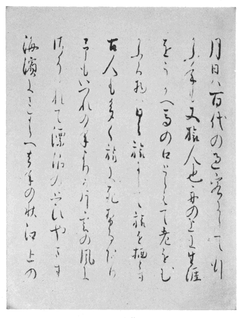

素龍清書本 おくのほそ道 （本文９頁參照）
［＃改丁］
一 本書は『おくのほそ道』および門人曾良の『隨行日記』（ただし元祿二年九月一〇日以降の分は省略）を飜刻し、脚註を加えたものである。底本として前者は素龍清書本（福井縣愛發 村、西村弘明氏藏）、後者は曾良自筆本（校註者藏）を用いた。兩者についての詳細は解説にゆずる。
一 飜刻にあたっては左の要領によった。
１ 行移り・丁うつりは註しない。ただし、『おくのほそ道』は適宜章段を設け、その各に見出しをつけ、『隨行日記』では日附變更の個所をはじめ通讀に便と思われる個所は適宜改行する。また、本文の見出しの下に『隨行日記』の參照個所の所在頁數を入れて示す。
２ 異體の文字は原則として通行のものに改める。『隨行日記』中の平假名・片假名の混用もできるだけ原本通りとするが、「ニ」「ハ」「ミ」等は原則として平假名にあつかう。
３ 振り假名・清濁・句讀・會話文のカッコ等は校訂者によってほどこす。その際、原本に動詞の活用語尾を表記してないものは、活用語尾をも振り假名の中に含める。また『隨行日記』中に稀に見える濁點の表記はその右傍に（マヽ）と註記して區別する。
４ 假名づかいは原文のままとし右傍のカッコ内に歴史的假名づかいを示すか、又は脚註に註記する。
５ 『隨行日記』中の見せ消ちの部分は左傍にヒヒヒヒの符號をつける。また日記中の略圖と上欄に書き込まれた※［＃白い長方形、U+25AD、4-3］※［＃垂直二等分線のある白い長方形、4-3］の符號は摸寫縮小して掲げる。鰭紙は貼られた場所をその行の上に で示し、その文言は本文中にの印をつけて示す。
で示し、その文言は本文中にの印をつけて示す。
で示し、その文言は本文中にの印をつけて示す。一 註・解説は引用文以外現代假名づかいを用いた。また、註は紙幅の都合により最少限度にとどめた。その際、古註・新註の多くを參照引用したがその旨註記する餘裕がなかった。ここに謝意を表する次第である。
［＃改丁］［＃ページの左右中央］
［＃改丁］
一

草の戸も住替 る代 ぞひなの家
七
一 李白の春夜宴二諸從弟桃李園一序「夫天地者萬物之逆旅、光陰者百代之過客、而浮世若レ夢、爲レ歡幾何」（古文眞寶後集）による。
二 芭蕉の敬慕した古人達、西行は河内弘川寺に、宗祇は箱根湯本の客舍に、李白は潯陽（實は當塗）に、杜甫は洞庭湖畔にそれぞれ客死した。
三 貞享四年十月から翌五年（元祿元年）へかけて東海道・和歌浦・須磨・明石を旅し、八月信州更科をへて歸庵した。
四 隅田川のほとり深川六間堀の芭蕉庵。
五 「そゞろ」を副詞とする説もあるが、「そゞろ神……、道祖神……」と對句になっているので、「そゞろ神」を一語に扱う。
六 杉山氏元雅。通稱鯉屋市兵衞。蕉門。江戸小田原町住、幕府御用の魚問屋。別墅を「採荼（サイト）庵」といい深川六間堀にあった。享保一七沒、八六歳。
七 百韻を四枚の懷紙に書くとき、その第一葉（初折）の表に發句から八句までを書き、これを表八句という。この作品は傳存していない。
二 芭蕉の敬慕した古人達、西行は河内弘川寺に、宗祇は箱根湯本の客舍に、李白は潯陽（實は當塗）に、杜甫は洞庭湖畔にそれぞれ客死した。
三 貞享四年十月から翌五年（元祿元年）へかけて東海道・和歌浦・須磨・明石を旅し、八月信州更科をへて歸庵した。
四 隅田川のほとり深川六間堀の芭蕉庵。
五 「そゞろ」を副詞とする説もあるが、「そゞろ神……、道祖神……」と對句になっているので、「そゞろ神」を一語に扱う。
六 杉山氏元雅。通稱鯉屋市兵衞。蕉門。江戸小田原町住、幕府御用の魚問屋。別墅を「採荼（サイト）庵」といい深川六間堀にあった。享保一七沒、八六歳。
七 百韻を四枚の懷紙に書くとき、その第一葉（初折）の表に發句から八句までを書き、これを表八句という。この作品は傳存していない。
旅立
日記一〇二頁
一
七行 春や鳥啼 魚 の目は泪
は途中に
一 三月二七日（陽暦五月一六日）。
二 「月は有明にて光をさまれるものから、影さやかに見えてなかなかをかしき曙なり」（源氏物語、箒木）
三 西行の仁安三年四國に旅する時加茂社に詣でての作、「かしこまるしでに涙のかゝるかな又いつかはと思ふ心に」（山家集）
四 ムツマシ・ムツマジ兩樣の讀みがあるが、古辭書類にある前者をとる。
五 千住。千壽とも。奧州街道第一番目の宿場。
六 「灑 洒ト同ジ。ソヽクト清テイフベシ、クノ字ヲ濁テソヽグトイフハ訛ナリ」（太宰春臺、倭讀要領、享保一三刊）
七 「羇鳥戀二舊林一、池魚思二故淵一」（陶淵明、歸二園田居一）によるか。
二 「月は有明にて光をさまれるものから、影さやかに見えてなかなかをかしき曙なり」（源氏物語、箒木）
三 西行の仁安三年四國に旅する時加茂社に詣でての作、「かしこまるしでに涙のかゝるかな又いつかはと思ふ心に」（山家集）
四 ムツマシ・ムツマジ兩樣の讀みがあるが、古辭書類にある前者をとる。
五 千住。千壽とも。奧州街道第一番目の宿場。
六 「灑 洒ト同ジ。ソヽクト清テイフベシ、クノ字ヲ濁テソヽグトイフハ訛ナリ」（太宰春臺、倭讀要領、享保一三刊）
七 「羇鳥戀二舊林一、池魚思二故淵一」（陶淵明、歸二園田居一）によるか。
草加
日記一〇二頁
ことし一元祿
一 西暦一六八九年。當時、芭蕉四六歳、曾良四一歳。
二 （ビン）僧可士の送レ僧詩「笠重呉天雪、鞋香楚地花」（詩人玉屑、禪林句集）によるか。
（ビン）僧可士の送レ僧詩「笠重呉天雪、鞋香楚地花」（詩人玉屑、禪林句集）によるか。
三 日記によればこの日は粕壁に泊っている。
四 旅裝をととのえるの意。デタチともいう。
五 「イチエ（ヒトツノコロモ）」（ロドリゲス大文典）
六 古辭書類にロシとあるによる。
二
（ビン）僧可士の送レ僧詩「笠重呉天雪、鞋香楚地花」（詩人玉屑、禪林句集）によるか。三 日記によればこの日は粕壁に泊っている。
四 旅裝をととのえるの意。デタチともいう。
五 「イチエ（ヒトツノコロモ）」（ロドリゲス大文典）
六 古辭書類にロシとあるによる。
室の八嶋
（神名帳六二頁［＃改行］備忘録七八頁［＃改行］日記一〇二頁［＃改行］書留一五〇頁）
一
出見
一 下野國（栃木縣）下都賀郡國府村總社にある大神（オオミワ）神社。室八嶋明神とも。
二 マウズと訓讀する場合、芭蕉はつねに「詣つ」としている故、ここはケイスと讀む。
三 岩波庄右衞門正字。信州上諏訪の人。はじめ伊勢長島藩に仕え、河合氏の養子となって河合惣五郎といった。致仕して蕉門に入る。寶永七年五月二二日沒、六二歳。
四 富士山麓大宮市の淺間（センゲン）神社。
五 木花開耶姫が瓊々杵尊の疑を晴らすため無戸室に入り火をはなって火闌降（ホスソリ）命・彦火々出見尊・火明命を生んで尊の子であることを示したという神話（日本書紀）。ただし、その場所は笠沙で室の八嶋には後世附會されたもの。
六 備忘録所收の歌の外、例多し。
七 『慈元抄』等に見える傳説。このしろを燒く匂は人をやく匂に似ているという。
二 マウズと訓讀する場合、芭蕉はつねに「詣つ」としている故、ここはケイスと讀む。
三 岩波庄右衞門正字。信州上諏訪の人。はじめ伊勢長島藩に仕え、河合氏の養子となって河合惣五郎といった。致仕して蕉門に入る。寶永七年五月二二日沒、六二歳。
四 富士山麓大宮市の淺間（センゲン）神社。
五 木花開耶姫が瓊々杵尊の疑を晴らすため無戸室に入り火をはなって火闌降（ホスソリ）命・彦火々出見尊・火明命を生んで尊の子であることを示したという神話（日本書紀）。ただし、その場所は笠沙で室の八嶋には後世附會されたもの。
六 備忘録所收の歌の外、例多し。
七 『慈元抄』等に見える傳説。このしろを燒く匂は人をやく匂に似ているという。
佛五左衞門
日記一〇三頁
一
一 日記によれば日光詣拜の後、四月一日のこと。しかもこの年は三月が二九日までで三〇日はない。
二 「腰間に寸鐵を帶びず、襟に一嚢をかけて手に十八の珠をたづさふ」（野ざらし紀行）、「一鉢境界乞食の身こそたうとけれとうたひに侘し貴僧の跡もなつかしく、猶このたびはやつし／＼てこもかぶるべき心がけにて御座候」（元祿二年二月伊賀宛書簡）等芭蕉の文あり。
三 「子曰、剛毅木訥近レ仁」（論語、子路篇）
二 「腰間に寸鐵を帶びず、襟に一嚢をかけて手に十八の珠をたづさふ」（野ざらし紀行）、「一鉢境界乞食の身こそたうとけれとうたひに侘し貴僧の跡もなつかしく、猶このたびはやつし／＼てこもかぶるべき心がけにて御座候」（元祿二年二月伊賀宛書簡）等芭蕉の文あり。
三 「子曰、剛毅木訥近レ仁」（論語、子路篇）
日光
（日記一〇三頁［＃改行］書留一五〇頁）
一
七あらたう と青葉若葉の日の光
八曾良
廿餘丁山を登つて瀧
一 陽暦五月一九日。
二 日光山五三代日光山座主天海が家康の廟を久能山よりここに移し、東照宮を造營。三代將軍家光の時（寛永一三年）改造今日のようになった。
三 音讀の場合はワウジャク。
四 補陀落山の音によった名稱。
五 實は延暦年間勝道上人の開基。空海は勝道の依頼をうけ「普陀洛山記」（遍照發揮性靈集）を書いたが、このことから後世空海の開基ならびに日光改稱の誤傳が生じたものであろう。
六 當時の文獻にはカガヤクと濁った例は見られぬ。
七 句型異同は書留脚註參照。
八 男體山。
九 「曾良何某此あたりちかく、かりに居をしめて朝な夕なにとひつとはる。我くひ物いとなむ時は柴を折くぶるたすけとなり、茶を煮夜はきたりて軒をたゝく。性隱閑をこのむ人にて交金をたつ。ある夜雪にとはれて・きみ火をたけよき物見せん雪まろげ・はせを」（雪丸げ）
一〇 「今遣二此力一、助二汝薪水之勞一」（昭明太子、陶靖節傳）
一一 「舊年名を改て・古き名は新敷名のとしおとこ・曾良」（芭蕉自筆元祿二年蕉門歳旦詠草）によれば改名は元祿元年のこととなる。
一二 黒の誤記。
一三 「日光より一里半程未申に當れり。…瀧の少し前に二間に三間程なる岩の洞窟（ホラアナ）有て三途（サウヅ）川の姥を作れり。…それより瀧へ下り、洞（ホラ）をつたひて瀧のうらより見る也。瀧の高さ二丈斗、ひろさ三間程有て、瀧裏のもとに石不動たゝせまします」（國花萬葉記）
一四 夏籠（ゲゴモリ）の略。四月一六日より九〇日間僧が一室にこもり精進する。夏安居（ゲアンゴ）とも。始を結夏（ケチゲ）終を夏解（ゲアキ）という。
二 日光山五三代日光山座主天海が家康の廟を久能山よりここに移し、東照宮を造營。三代將軍家光の時（寛永一三年）改造今日のようになった。
三 音讀の場合はワウジャク。
四 補陀落山の音によった名稱。
五 實は延暦年間勝道上人の開基。空海は勝道の依頼をうけ「普陀洛山記」（遍照發揮性靈集）を書いたが、このことから後世空海の開基ならびに日光改稱の誤傳が生じたものであろう。
六 當時の文獻にはカガヤクと濁った例は見られぬ。
七 句型異同は書留脚註參照。
八 男體山。
九 「曾良何某此あたりちかく、かりに居をしめて朝な夕なにとひつとはる。我くひ物いとなむ時は柴を折くぶるたすけとなり、茶を煮夜はきたりて軒をたゝく。性隱閑をこのむ人にて交金をたつ。ある夜雪にとはれて・きみ火をたけよき物見せん雪まろげ・はせを」（雪丸げ）
一〇 「今遣二此力一、助二汝薪水之勞一」（昭明太子、陶靖節傳）
一一 「舊年名を改て・古き名は新敷名のとしおとこ・曾良」（芭蕉自筆元祿二年蕉門歳旦詠草）によれば改名は元祿元年のこととなる。
一二 黒の誤記。
一三 「日光より一里半程未申に當れり。…瀧の少し前に二間に三間程なる岩の洞窟（ホラアナ）有て三途（サウヅ）川の姥を作れり。…それより瀧へ下り、洞（ホラ）をつたひて瀧のうらより見る也。瀧の高さ二丈斗、ひろさ三間程有て、瀧裏のもとに石不動たゝせまします」（國花萬葉記）
一四 夏籠（ゲゴモリ）の略。四月一六日より九〇日間僧が一室にこもり精進する。夏安居（ゲアンゴ）とも。始を結夏（ケチゲ）終を夏解（ゲアキ）という。
那須
日記一〇三頁
那須の一黒ばねと
かさねとは八重撫子の名成 べし
曾良
一 栃木縣那須郡黒羽町。知人とは後出の翠桃をさす。
二 日記四月二日の項にあたる。「下野國鹽谷郡玉生の驛長、玉生氏の家は芭蕉一夜宿らせ給ふと傳にあり」（おくの雪道）
三 タテヨコの讀みもあるが、曾良本に「東西縱横」とあり、音讀すべきである。
二 日記四月二日の項にあたる。「下野國鹽谷郡玉生の驛長、玉生氏の家は芭蕉一夜宿らせ給ふと傳にあり」（おくの雪道）
三 タテヨコの讀みもあるが、曾良本に「東西縱横」とあり、音讀すべきである。
黒羽
（日記一〇四―一〇六頁［＃改行］書留 一五〇頁）
黒羽の一
九
夏山に足駄 を拜む首途 哉
一 領主大關氏の留守居役。
二 通稱圖書、諱は高勝。俳號を秋鴉という。日記により四日に訪れたことがわかる。
三 俳號翠桃の誤り。鹿子畑豐明（當時岡氏を稱した）。日記によれば、四月三日黒羽郊外の余瀬にある翠桃宅をまず訪れている。
四 騎馬で犬を追い して射る競技。三浦介義明等が那須野にのがれた妖狐玉藻の前を射る練習をしたのに始まるといわれる（臥雲日件録）。黒羽の西北一里半蜂巣に遺跡あり。
して射る競技。三浦介義明等が那須野にのがれた妖狐玉藻の前を射る練習をしたのに始まるといわれる（臥雲日件録）。黒羽の西北一里半蜂巣に遺跡あり。
五 日記によれば一二日のこと。
六 三國傳來の金毛九尾の妖狐渡來し、玉藻の前となり近衞天皇の愛寵を受けたが、安倍泰成に調伏され下野の那須野に逃げ、三浦介義明等に殺された。怨靈は殺生石となり源翁和尚の 杖により碎け去った。黒羽の川西町篠原神社境内に狐塚あり。
杖により碎け去った。黒羽の川西町篠原神社境内に狐塚あり。
七 日記によれば一三日のこと。「與市宗高氏神、八幡宮は館より程近し。宗高祈願して扇的を射たると聞ば、誠感應彌増て尊かりき」（陸奧鵆）
八 「歸命頂禮八幡大菩薩日本國中大小神祇、別しては下野日光宇都宮氏の御神那須大明神弓矢の冥加あるべくは扇を座席に定めて給へ」（源平盛衰記）、「南無八幡大菩薩別しては我が國の神明日光權現宇都宮那須湯泉大明神願はくはあの扇の眞中射させてたばせ給へ」（平家物語）
九 日記では九日のこと。
二 通稱圖書、諱は高勝。俳號を秋鴉という。日記により四日に訪れたことがわかる。
三 俳號翠桃の誤り。鹿子畑豐明（當時岡氏を稱した）。日記によれば、四月三日黒羽郊外の余瀬にある翠桃宅をまず訪れている。
四 騎馬で犬を追い
して射る競技。三浦介義明等が那須野にのがれた妖狐玉藻の前を射る練習をしたのに始まるといわれる（臥雲日件録）。黒羽の西北一里半蜂巣に遺跡あり。五 日記によれば一二日のこと。
六 三國傳來の金毛九尾の妖狐渡來し、玉藻の前となり近衞天皇の愛寵を受けたが、安倍泰成に調伏され下野の那須野に逃げ、三浦介義明等に殺された。怨靈は殺生石となり源翁和尚の
杖により碎け去った。黒羽の川西町篠原神社境内に狐塚あり。七 日記によれば一三日のこと。「與市宗高氏神、八幡宮は館より程近し。宗高祈願して扇的を射たると聞ば、誠感應彌増て尊かりき」（陸奧鵆）
八 「歸命頂禮八幡大菩薩日本國中大小神祇、別しては下野日光宇都宮氏の御神那須大明神弓矢の冥加あるべくは扇を座席に定めて給へ」（源平盛衰記）、「南無八幡大菩薩別しては我が國の神明日光權現宇都宮那須湯泉大明神願はくはあの扇の眞中射させてたばせ給へ」（平家物語）
九 日記では九日のこと。
雲岩寺
（日記一〇四頁［＃改行］書留一五四頁）
當國雲
竪横の五尺にたらぬ草の庵
むすぶもくやし雨なかりせば
と松の炭して岩にむすぶもくやし雨なかりせば
すゝんで共にいざなひ、若き人おほく道のほどさてかの跡はいづくのほどにやと、
一 鹿島根本寺の第二一世。江戸深川に滯在中、芭蕉が參禪した師。正徳五沒、七三歳。
二 書留に見える。
三 五橋の一つ瓜 橋。
橋。
四 中國南宋の名僧。杭州天目山の張公洞に入り、其の扁額に死關と題した。十五年間戸を鎖して出なかったと傳える。
五 中國梁の高僧。秣陵縣に法雲寺を建て庵を孤岩に結んで終日論談して倦まなかったという。
二 書留に見える。
三 五橋の一つ瓜
橋。四 中國南宋の名僧。杭州天目山の張公洞に入り、其の扁額に死關と題した。十五年間戸を鎖して出なかったと傳える。
五 中國梁の高僧。秣陵縣に法雲寺を建て庵を孤岩に結んで終日論談して倦まなかったという。
殺生石・遊行柳
（日記一〇七頁［＃改行］書留一五七頁）
野を横に二馬 牽 むけよほとゝぎす
一 黒羽の西北六里湯本にある。「凡七尺四方高サ四尺餘、色赤黒シ…十間四方ニ圍テ諸人不入」（陸奧鵆）とあり。前出の玉藻前が死してこの石に化したと傳える。
二 「およぶべき雲居ならねどほととぎす駒ひきむけてしたふ聲かな」（芭蕉翁全傳等所收）
三 那須温泉。
四 「今亦捉レ蟲、置二石面一則立死矣」（和漢三才圖會）
五 「道のべに清水流るる柳蔭しばしとてこそ立ちどまりつれ・西行」（新古今）。謠曲「遊行柳」にもあり有名。
六 日記一〇七頁參照。
七 蘆野資俊、通稱蘆野民部。元祿五沒、五六歳。戸部は民部の唐名。戸邨の誤記ともいう。
二 「およぶべき雲居ならねどほととぎす駒ひきむけてしたふ聲かな」（芭蕉翁全傳等所收）
三 那須温泉。
四 「今亦捉レ蟲、置二石面一則立死矣」（和漢三才圖會）
五 「道のべに清水流るる柳蔭しばしとてこそ立ちどまりつれ・西行」（新古今）。謠曲「遊行柳」にもあり有名。
六 日記一〇七頁參照。
七 蘆野資俊、通稱蘆野民部。元祿五沒、五六歳。戸部は民部の唐名。戸邨の誤記ともいう。
白川の關
（備忘録八九頁［＃改行］日記一〇九頁［＃改行］書留一六一［＃改行］ 一六四頁）
七卯の花をかざしに關 の晴着 かな
曾良
一 戸川氏藏去來本に「かさなるまゝに」と假名書にする。
二 「たよりあらばいかで都へ告げやらん今日白河の關は越えぬと・平兼盛」（拾遺）
三 羽前の念珠（ネズ）、磐城の白河、常陸の勿來（ナコソ）を東國の三關という。
四 「都をば霞とともに立ちしかど秋風ぞ吹く白河の關・能因」（後拾遺）
五 「都にはまだ青葉にて見しかども紅葉ちりしく白河の關・頼政」（千載）
六 「竹田太夫國行と云ふ者陸奧に下向の時、白川の關すぐる日は殊に裝束ひき繕ひ向ふと云々。人問うていはく何等の故ぞや。答ていはく、古曾部入道の秋風ぞ吹く白川の關と詠まれたる所をばいかでかけなりにては過ぎむ云々、殊勝の事か」（袋草紙）
七 書留一六四頁參照。
二 「たよりあらばいかで都へ告げやらん今日白河の關は越えぬと・平兼盛」（拾遺）
三 羽前の念珠（ネズ）、磐城の白河、常陸の勿來（ナコソ）を東國の三關という。
四 「都をば霞とともに立ちしかど秋風ぞ吹く白河の關・能因」（後拾遺）
五 「都にはまだ青葉にて見しかども紅葉ちりしく白河の關・頼政」（千載）
六 「竹田太夫國行と云ふ者陸奧に下向の時、白川の關すぐる日は殊に裝束ひき繕ひ向ふと云々。人問うていはく何等の故ぞや。答ていはく、古曾部入道の秋風ぞ吹く白川の關と詠まれたる所をばいかでかけなりにては過ぎむ云々、殊勝の事か」（袋草紙）
七 書留一六四頁參照。
須賀川
（日記一一一頁［＃改行］書留一五八頁）
とかくして
すか
九栗といふ文字 は西の木と書 て、西方淨土 に便 ありと、行基菩薩 の一生 杖 にも柱 にも此 木を用 給ふとかや、
一 「阿武隈川、白河西甲子温泉山ヨリ流出、仙臺荒濱ニテ海ヘ落」（蝦夷文段抄）
二 會津磐梯山。
三 三春は今の田村郡。阿武隈山脈に沿い南から石城・田村・相馬の三郡あり。
四 建暦年間、和田胤長が父義盛の事に坐しここに流されたが、其の妻が夫を慕って來た時には既に誅せられていた。妻は鏡を抱いて此の沼に入水。そのため鏡のごとく沼にものがうつる由。
五 「或書に、影沼は空曇る日は物影不レ見」（行嚢抄）
六 普通等躬と書く。はじめ石田未得門、後岸本調和の客分。須賀川の驛長という。正徳五沒、七八歳。
七 書留所收の歌仙一卷と、「茨やうをまた習ひけりかつみ草・等躬」と「旅衣早苗に包食こはん・曾良」の二句をそれ／″＼發句とする第三までの二つを合せていうものであろう。
八 「山深み岩にしただる水とめんかつがつ落つる橡拾ふほど・西行」（山家集）
九 出典未詳。
二 會津磐梯山。
三 三春は今の田村郡。阿武隈山脈に沿い南から石城・田村・相馬の三郡あり。
四 建暦年間、和田胤長が父義盛の事に坐しここに流されたが、其の妻が夫を慕って來た時には既に誅せられていた。妻は鏡を抱いて此の沼に入水。そのため鏡のごとく沼にものがうつる由。
五 「或書に、影沼は空曇る日は物影不レ見」（行嚢抄）
六 普通等躬と書く。はじめ石田未得門、後岸本調和の客分。須賀川の驛長という。正徳五沒、七八歳。
七 書留所收の歌仙一卷と、「茨やうをまた習ひけりかつみ草・等躬」と「旅衣早苗に包食こはん・曾良」の二句をそれ／″＼發句とする第三までの二つを合せていうものであろう。
八 「山深み岩にしただる水とめんかつがつ落つる橡拾ふほど・西行」（山家集）
九 出典未詳。
あさか沼
（備忘録八六［＃改行］ 八七頁［＃改行］日記一一三頁）
に
一 安積山。淺香山。檜皮の北に連なる丘陵。歌枕。
二 今鏡や無名抄に藤中將實方があやめの代りに葺けと言ったという花かつみ。古の眞菰の異名。
三 檜皮の北五里。
四 謠曲「安達ヶ原（黒塚）」などで名高い。
二 今鏡や無名抄に藤中將實方があやめの代りに葺けと言ったという花かつみ。古の眞菰の異名。
三 檜皮の北五里。
四 謠曲「安達ヶ原（黒塚）」などで名高い。
しのぶの里
（備忘録八八頁［＃改行］日記一一五頁［＃改行］書留一六五頁）
あくれば一しのぶもぢ
一 「陸奧のしのぶもぢずり誰ゆゑに亂れむと思ふわれならなくに・河原左大臣融」（古今）。信夫郡から産した布、石に布をあて草で摺って模樣を出した由。
二 「いつの比か岨より轉落て今は文字の方下に成石の裏を見る。扇にて尺をとるに長サ一丈五寸、幅七尺餘、楢の丸太をもて圍ひ、脇より目印に杉二本植」（陸奧鵆）
三 「往昔好事者、磨二麥葉于石上一、則見二所レ思之人影一。近郊麥隴爲レ之就レ蕪。故農夫惡レ之、壓二倒其石一而埋二于土中一其石猶存焉」（佐久間容軒、奧羽觀蹟聞老志）
二 「いつの比か岨より轉落て今は文字の方下に成石の裏を見る。扇にて尺をとるに長サ一丈五寸、幅七尺餘、楢の丸太をもて圍ひ、脇より目印に杉二本植」（陸奧鵆）
三 「往昔好事者、磨二麥葉于石上一、則見二所レ思之人影一。近郊麥隴爲レ之就レ蕪。故農夫惡レ之、壓二倒其石一而埋二于土中一其石猶存焉」（佐久間容軒、奧羽觀蹟聞老志）
佐藤庄司の舊跡
日記一一五頁
月の輪のわたしを
一 佐藤元治。藤原秀衡の臣。繼信・忠信の父。信夫郡を領す。文治五年源頼朝が泰衡を攻めた時、福島南方の石那坂で戰死。
二 「佐渡（マヽ）庄司の館むかしの池のかたちあれたるを見侍りて・繪圖にせばすはまた池やかきつばた・水野林元」（櫻川）、また「大門礎わつかに殘り」（烏子欄）とあり。
三 飯坂の誤りという説もあるが、飯塚の地名當時存した。
四 佐場野。飯坂の南十町。
五 佐場野在。「佐藤莊司館、上飯坂村ノ西、在二天王寺・中野村之間一、稱二大鳥城一、郷人謂二之丸山城一」（奧羽觀蹟聞老志）
六 日記の佐藤庄司の寺にあたる。城址の南にあり。眞言宗。
七 二人の妻の碑は今この寺にはないが、秀國の奧羽行記に「一家の石碑あり。中にも二人の嫁のしるしを見るより泪を催し哀なる處なり」とあり。
八 晋の襄陽の太守羊 の沒後、百姓其徳をしたい碑を硯山に建てた。見る者涙を流したので、杜預が墮涙碑と名づけた。（晋書、羊傳）
の沒後、百姓其徳をしたい碑を硯山に建てた。見る者涙を流したので、杜預が墮涙碑と名づけた。（晋書、羊傳）
九 實は五月二日（陽暦六月一八日）にあたる。芭蕉の記憶ちがいであろう。
二 「佐渡（マヽ）庄司の館むかしの池のかたちあれたるを見侍りて・繪圖にせばすはまた池やかきつばた・水野林元」（櫻川）、また「大門礎わつかに殘り」（烏子欄）とあり。
三 飯坂の誤りという説もあるが、飯塚の地名當時存した。
四 佐場野。飯坂の南十町。
五 佐場野在。「佐藤莊司館、上飯坂村ノ西、在二天王寺・中野村之間一、稱二大鳥城一、郷人謂二之丸山城一」（奧羽觀蹟聞老志）
六 日記の佐藤庄司の寺にあたる。城址の南にあり。眞言宗。
七 二人の妻の碑は今この寺にはないが、秀國の奧羽行記に「一家の石碑あり。中にも二人の嫁のしるしを見るより泪を催し哀なる處なり」とあり。
八 晋の襄陽の太守羊
の沒後、百姓其徳をしたい碑を硯山に建てた。見る者涙を流したので、杜預が墮涙碑と名づけた。（晋書、羊傳）九 實は五月二日（陽暦六月一八日）にあたる。芭蕉の記憶ちがいであろう。
飯塚
日記一一六頁
一 前出の飯塚とちがい、宿泊したのは飯坂。もちろん五月二日の夜にあたる。
二 タテヨコと讀む訓あるも、縱横無礙の語によったものであるから音讀すべきである。
三 「伊達の大木戸を見るに左は雲に續たる層巒爰にせまり、右の田の面廣ふして一段ひきく、すはと云はば遙の山際迄大隈川をせき入てたちまちの湖水となさん、日本一の要害、人力の及ぶまじき所・大木戸に入や子鷹も身のほそり・露川」（國曲集）とある。ここより北、伊達領なので伊達關という。
二 タテヨコと讀む訓あるも、縱横無礙の語によったものであるから音讀すべきである。
三 「伊達の大木戸を見るに左は雲に續たる層巒爰にせまり、右の田の面廣ふして一段ひきく、すはと云はば遙の山際迄大隈川をせき入てたちまちの湖水となさん、日本一の要害、人力の及ぶまじき所・大木戸に入や子鷹も身のほそり・露川」（國曲集）とある。ここより北、伊達領なので伊達關という。
笠嶋
（日記一一六頁［＃改行］書留一六七頁）
一
笠嶋はいづこさ月のぬかり道
六岩沼に宿る。
一 「海道へ出るに國見山高くささえ、伊達の木戸構きびしく見ゆ。是ヨリ才川村入口に鐙摺の岩あり、一騎立の細道也。少行て右の方に寺有。小高キ所、堂一宇、次信・忠信兩妻軍立の姿にて相双びたり。外に本尊なし・軍めく二人の嫁や花あやめ・桃隣」（陸奧鵆）
二 郡というは誤り。實は名取郡。
三 一條天皇時代の歌人藤原實方。殿上で行成と口論し勅勘を蒙り、陸奧守に貶せられ、下向の際笠嶋の道祖神の前を下馬せずに通ったため落馬して死んだ。社の傍にその塚あり。（源平盛衰記）
四 左の誤り。日記・書留ともに左とあり、『猿蓑』所收のこの句の詞書も左とする。「岩沼を一里行て一村有。左の方ヨリ一里半、山の根に入て笠嶋」（陸奧鵆）
五 「さらぬだにもの哀れに覺えけるに霜枯の薄ほのぼの見え渡りて・朽ちもせぬ其の名ばかりをとめおきて枯野の薄形見にぞ見る・西行」（山家集）
六 實は泊らず。日記參照。
二 郡というは誤り。實は名取郡。
三 一條天皇時代の歌人藤原實方。殿上で行成と口論し勅勘を蒙り、陸奧守に貶せられ、下向の際笠嶋の道祖神の前を下馬せずに通ったため落馬して死んだ。社の傍にその塚あり。（源平盛衰記）
四 左の誤り。日記・書留ともに左とあり、『猿蓑』所收のこの句の詞書も左とする。「岩沼を一里行て一村有。左の方ヨリ一里半、山の根に入て笠嶋」（陸奧鵆）
五 「さらぬだにもの哀れに覺えけるに霜枯の薄ほのぼの見え渡りて・朽ちもせぬ其の名ばかりをとめおきて枯野の薄形見にぞ見る・西行」（山家集）
六 實は泊らず。日記參照。
武隈
（備忘録七九［＃改行］ 八三頁［＃改行］日記一一六頁）
武隈の松にこそめ
「武隈の松みせ申せ遲櫻」と五擧白 と云 ものゝ餞別 したりければ、
六櫻より松は二木 を三月越
一 「武隈の松はこの度跡もなし千年を經てや我は來つらむ・能因」（後拾遺）
二 藤原元義任にてこの地に下り、館の前に松を植えたが、其後孝義任國の時これを伐って橋につくり、後絶えたという。（袖中抄）
三 仙臺の南部を海に流入る河。備忘録八四頁參照。
四 「岩沼へかかり橋の際左へ二丁入て竹駒明神あり。社より乾の方へ一丁行つて武隈の松あり。松は二木にして拔打垂、名木とは見えたり」（陸奧鵆）
五 草壁氏。江戸住。公羽宛杉風書簡に「擧白儀は宗匠にては無二御座一候。私共之樣成商人にて御座候」とある。馬蹄二百韵・四季千句の撰あり。
六 「武隈の松は二木を都人いかにととはばみきと答へん・橘季通」（後拾遺集）、「武隈の松の稍に春と夏二季をかけて藤咲きにけり・公朝」（未木抄）
二 藤原元義任にてこの地に下り、館の前に松を植えたが、其後孝義任國の時これを伐って橋につくり、後絶えたという。（袖中抄）
三 仙臺の南部を海に流入る河。備忘録八四頁參照。
四 「岩沼へかかり橋の際左へ二丁入て竹駒明神あり。社より乾の方へ一丁行つて武隈の松あり。松は二木にして拔打垂、名木とは見えたり」（陸奧鵆）
五 草壁氏。江戸住。公羽宛杉風書簡に「擧白儀は宗匠にては無二御座一候。私共之樣成商人にて御座候」とある。馬蹄二百韵・四季千句の撰あり。
六 「武隈の松は二木を都人いかにととはばみきと答へん・橘季通」（後拾遺集）、「武隈の松の稍に春と夏二季をかけて藤咲きにけり・公朝」（未木抄）
宮城野
（ 八二［＃改行］備忘録 八八頁［＃改行］ 一〇〇［＃改行］日記 一一六頁）
あやめ草足に結 ん草鞋 の緒
一 五月四日は陽暦六月二〇日。
二 北野氏。山田屋二代目、嘉右衞門・庄兵衞とも。畫工、版木彫刻を業とする。俳號加之又は竹村・四鶴。延享三年四月一七日沒。
三 歌枕。仙臺驛の東半里。
四 「東照神廟東北山間有二湖水一、稱二玉田湖一、自レ是以東山下稱二横野一」（奧羽觀蹟聞老志）。本文は「とりつなげ玉田横野の放れ駒つゝじが岡にあせみ咲くなり・源俊頼」（散木集）による。つゝじが岡は宮城野の西の高臺。「つゝしか岡今は原町とて在家になる」（奧羽名所鑑、寛延元成）
五 宮城野の南にあり。「みさぶらひみ笠と申せ宮城野の木の下露は雨にまされり」（古今、東歌）
六 善遊堂とも。木の下附近にあり、朽廢久しきものを伊達政宗が慶長頃修理改造した。
七 宮城郡玉崎山にあったものを寛文七年伊達綱村がここに遷座。
二 北野氏。山田屋二代目、嘉右衞門・庄兵衞とも。畫工、版木彫刻を業とする。俳號加之又は竹村・四鶴。延享三年四月一七日沒。
三 歌枕。仙臺驛の東半里。
四 「東照神廟東北山間有二湖水一、稱二玉田湖一、自レ是以東山下稱二横野一」（奧羽觀蹟聞老志）。本文は「とりつなげ玉田横野の放れ駒つゝじが岡にあせみ咲くなり・源俊頼」（散木集）による。つゝじが岡は宮城野の西の高臺。「つゝしか岡今は原町とて在家になる」（奧羽名所鑑、寛延元成）
五 宮城野の南にあり。「みさぶらひみ笠と申せ宮城野の木の下露は雨にまされり」（古今、東歌）
六 善遊堂とも。木の下附近にあり、朽廢久しきものを伊達政宗が慶長頃修理改造した。
七 宮城郡玉崎山にあったものを寛文七年伊達綱村がここに遷座。
壺の碑
（ 八〇［＃改行］備忘録八三頁［＃改行］ 九九［＃改行］日記一一八頁）
かの畫圖にまかせてたどり
四壺碑 市川村多賀城に有
つぼの石ぶみは、高サ六尺
一 仙臺東北部、岩切の今市より多賀城市川までの冠川に沿った道という。西鶴は一目玉鉾にオクノホソヂとする。
二 編み目の十筋ある菅薦を十符の菅薦といい、それに用いる菅なので十符の菅という。「みちのくのとふのすがごも七符には君をねさせて我三符にねむ・讀人不知」（夫木抄）
三 備忘録に獻上の事を記す。封内風土記に「岩切農家高森舘下有二小池一」というが、その高森家が藩主より五〇貫の扶持をうけ管理したという。
四 書留に曾良も碑文を寫している。芭蕉の寫しは誤脱・省略が多い。書留九九頁參照。
五 『行嚢抄』に「鎭守府將軍從四位」までを寫し、「此外文字不見」とあり。
六 神龜の頃、藤原宇合（ウマカヒ）をたすけて蝦夷を討ち、その功により鎭守府將軍となり再び蝦夷を撃ってことごとく破り降す。天平一四沒。
七 芭蕉は朝※［＃「けものへん＋萬」、U+248A5、27-下-17］の朝の字を書き落す。惠美押勝の子。陸奧守按察使兼鎭守府將軍、東海道節度使等を經て參議となる。父と共に叛き天平寶字八年誅せられた。
八 而の字は也の誤りか。
九 板本・戸川氏藏去來本等「落て」とする。曾良本は「流て」
二 編み目の十筋ある菅薦を十符の菅薦といい、それに用いる菅なので十符の菅という。「みちのくのとふのすがごも七符には君をねさせて我三符にねむ・讀人不知」（夫木抄）
三 備忘録に獻上の事を記す。封内風土記に「岩切農家高森舘下有二小池一」というが、その高森家が藩主より五〇貫の扶持をうけ管理したという。
四 書留に曾良も碑文を寫している。芭蕉の寫しは誤脱・省略が多い。書留九九頁參照。
五 『行嚢抄』に「鎭守府將軍從四位」までを寫し、「此外文字不見」とあり。
六 神龜の頃、藤原宇合（ウマカヒ）をたすけて蝦夷を討ち、その功により鎭守府將軍となり再び蝦夷を撃ってことごとく破り降す。天平一四沒。
七 芭蕉は朝※［＃「けものへん＋萬」、U+248A5、27-下-17］の朝の字を書き落す。惠美押勝の子。陸奧守按察使兼鎭守府將軍、東海道節度使等を經て參議となる。父と共に叛き天平寶字八年誅せられた。
八 而の字は也の誤りか。
九 板本・戸川氏藏去來本等「落て」とする。曾良本は「流て」
末の松山
（備忘録八五［＃改行］ 八九頁［＃改行］日記一一八頁）
それより一野田の玉川・二沖の石を
一 歌枕。六玉川の一つ。壺碑の東一〇町。
二 「我が袖は汐干に見えぬ沖の石の人こそ知らね乾く間もなし・二條院讃岐」（千載）によって附會された石。「此所（壺の碑）より八幡村へ一里餘。細道を分入、八幡村百姓の裏に奧の井有。三間四方の岩、りは池也。處の者は沖の石と云。是より末の松山、むかふに海原見ゆ」（陸奧鵆）
三 「契りきなかたみに袖をしぼりつつ末の松山波こさじとは・元輔」（後拾遺）八幡村の北の丘、今海より一里へだたる。末松山寶國寺あり。禪宗。
四 白樂天の長恨歌「在レ天願作二比翼鳥一、在レ地願爲二連理枝一。」
五 曾良本「終には」、松島の賦「終には」とある。
六 塩釜の東十餘町の海上にあり。
七 「みちのくはいづくはあれどしほがまの浦こぐ舟の綱手かなしも」（古今、東歌）
八 仙臺淨瑠璃・御國淨瑠璃とも。この地方に行われた古淨瑠璃。
九 平家琵琶。
一〇 幸若舞。舞々ともいう。
二 「我が袖は汐干に見えぬ沖の石の人こそ知らね乾く間もなし・二條院讃岐」（千載）によって附會された石。「此所（壺の碑）より八幡村へ一里餘。細道を分入、八幡村百姓の裏に奧の井有。三間四方の岩、
りは池也。處の者は沖の石と云。是より末の松山、むかふに海原見ゆ」（陸奧鵆）三 「契りきなかたみに袖をしぼりつつ末の松山波こさじとは・元輔」（後拾遺）八幡村の北の丘、今海より一里へだたる。末松山寶國寺あり。禪宗。
四 白樂天の長恨歌「在レ天願作二比翼鳥一、在レ地願爲二連理枝一。」
五 曾良本「終には」、松島の賦「終には」とある。
六 塩釜の東十餘町の海上にあり。
七 「みちのくはいづくはあれどしほがまの浦こぐ舟の綱手かなしも」（古今、東歌）
八 仙臺淨瑠璃・御國淨瑠璃とも。この地方に行われた古淨瑠璃。
九 平家琵琶。
一〇 幸若舞。舞々ともいう。
鹽釜
（備忘録八八頁［＃改行］日記一一八頁）
一 塩釜神社。一名塩竈六所大明神。塩釜市の西北の丘陵にあり。奧州一の宮。
二 伊達政宗、慶長一二年修造。
三 「石階百八十間」（松島眺望集）とあり。
四 カカヤカスと清音に讀む。
五 「神前にたけ一丈一尺の鐵塔あり。むかし秀衡三男泉の三郎建立、再興寛文年中仙臺堺氏宗心、莊嚴美なり」（松島眺望集）、「前に鐵燈籠、形は林塔のごとく也」（奧羽名所鑑）
六 正しくは「奉寄進／文治三年七月十日和泉三郎忠衡敬白」とあり。
七 藤原秀衡の三男、忠衡。父の遺命を守り義經に味方し、文治五年兄泰衡に殺された。年二三。
八 韓愈の進學解「動得レ謗、名亦隨レ之」（古文眞寶）による。
二 伊達政宗、慶長一二年修造。
三 「石階百八十間」（松島眺望集）とあり。
四 カカヤカスと清音に讀む。
五 「神前にたけ一丈一尺の鐵塔あり。むかし秀衡三男泉の三郎建立、再興寛文年中仙臺堺氏宗心、莊嚴美なり」（松島眺望集）、「前に鐵燈籠、形は林塔のごとく也」（奧羽名所鑑）
六 正しくは「奉寄進／文治三年七月十日和泉三郎忠衡敬白」とあり。
七 藤原秀衡の三男、忠衡。父の遺命を守り義經に味方し、文治五年兄泰衡に殺された。年二三。
八 韓愈の進學解「動得レ謗、名亦隨レ之」（古文眞寶）による。
松嶋
（備忘録八一［＃改行］ 八六頁［＃改行］日記一一八頁）
日
 然
然松嶋や
予は口をとぢて眠らんとしていねられず。曾良
一 松島灣の竹の浦東南瑞巖寺の西南にある島。海岸との間僅かで、橋をかけて通ずる。
二 洞庭湖。中國湖南省北部の大湖。
三 中國浙江省、杭州府城の西にあり、洞庭とともに美景をもって有名。
四 浙江省にあり。今の錢塘江。江口の潮の滿干の差甚だしく江中に逆流する奇觀が有名。
五 蘇東坡が西湖で詠じた飮二湖上一初晴後雨の詩に「水光瀲 晴偏好、山色空濛雨亦奇、若把二西湖一比二西子一、淡粧濃抹總相宜」とある。
晴偏好、山色空濛雨亦奇、若把二西湖一比二西子一、淡粧濃抹總相宜」とある。
六 濁音に讀むために「す」と誤ったものであろうが、この語は「大山つみ」と濁らない方が正しい。
七 松島瑞巖寺中興の僧。土佐の人京都妙心寺の僧であったが、伊達忠宗に招かれここに移った。萬治二年八月八日沒、七八歳。
八 把不住軒。「松島の左、地をはなれし處に十三間の橋あり。藤咲かかる松しまの橋とよめる、是也。尤境地無双の地也。骨堂あり。把不住軒とて雲居和尚禪堂あり」（松島眺望集）
九 『松島眺望集』の右の文のつづきに「又松吟庵とて道心者の室あり」として松吟菴記及び詩を示す。
一〇 山口氏信章。芭蕉と若い頃からの親友。甲府の酒屋で早く江戸に出た。後、葛飾に住む。享保元沒、七五歳。
一一 『素堂家集（由誓編）』『奧の細道解』に「夏初松島自清幽、雲外杜鵑聲未レ同、眺望洗レ心都似レ水、可レ憐蒼翠對二青眸一」の詩を示す。
一二 江戸京橋の醫者。歌は不明。
一三 大垣藩士。中川甚五兵衞。當時江戸詰。蕉門。
二 洞庭湖。中國湖南省北部の大湖。
三 中國浙江省、杭州府城の西にあり、洞庭とともに美景をもって有名。
四 浙江省にあり。今の錢塘江。江口の潮の滿干の差甚だしく江中に逆流する奇觀が有名。
五 蘇東坡が西湖で詠じた飮二湖上一初晴後雨の詩に「水光瀲
晴偏好、山色空濛雨亦奇、若把二西湖一比二西子一、淡粧濃抹總相宜」とある。六 濁音に讀むために「す」と誤ったものであろうが、この語は「大山つみ」と濁らない方が正しい。
七 松島瑞巖寺中興の僧。土佐の人京都妙心寺の僧であったが、伊達忠宗に招かれここに移った。萬治二年八月八日沒、七八歳。
八 把不住軒。「松島の左、地をはなれし處に十三間の橋あり。藤咲かかる松しまの橋とよめる、是也。尤境地無双の地也。骨堂あり。把不住軒とて雲居和尚禪堂あり」（松島眺望集）
九 『松島眺望集』の右の文のつづきに「又松吟庵とて道心者の室あり」として松吟菴記及び詩を示す。
一〇 山口氏信章。芭蕉と若い頃からの親友。甲府の酒屋で早く江戸に出た。後、葛飾に住む。享保元沒、七五歳。
一一 『素堂家集（由誓編）』『奧の細道解』に「夏初松島自清幽、雲外杜鵑聲未レ同、眺望洗レ心都似レ水、可レ憐蒼翠對二青眸一」の詩を示す。
一二 江戸京橋の醫者。歌は不明。
一三 大垣藩士。中川甚五兵衞。當時江戸詰。蕉門。
瑞巖寺
（備忘録八六頁［＃改行］日記一一八頁）
十一日、一瑞
一 「瑞岩圓福禪寺、承和五年台宗慈覺大師開基云々。法身和尚以來禪宗也。…元亨釋書曰、法身性西和尚、過二壯歳一、出家不レ知二文墨一、聞二衲子一稱二宋地禪行一駕二商船一入二臨安一、徑登二徑山一、見二佛鑑禪師一云々」（松島眺望集）
二 禪宗では三門・佛殿・法堂・僧堂・庫裡・浴室・東司を七堂という。
三 『菅菰抄』に壁の字は碧の誤りであるかも知れないとする。
四 カカヤカシは當時清音。
五 庵を雄島に結び一二年、法華經讀誦六萬遍に及び鳥羽帝の賞を賜わる。西行、見佛聖を松島まで慕い來て二カ月住したという。
二 禪宗では三門・佛殿・法堂・僧堂・庫裡・浴室・東司を七堂という。
三 『菅菰抄』に壁の字は碧の誤りであるかも知れないとする。
四 カカヤカシは當時清音。
五 庵を雄島に結び一二年、法華經讀誦六萬遍に及び鳥羽帝の賞を賜わる。西行、見佛聖を松島まで慕い來て二カ月住したという。
平泉
（備忘録八一―九〇頁［＃改行］日記 一一九頁）
十二日、
船一〇三代の
二〇
曾良
一 松島の北一四里。栗原郡金成町姉齒にある。「栗原のあねはの松の人ならば都のつとにいざと云はましを」（伊勢物語）
二 松島の西北七里。古川市にあった。「みちのくの緒絶の橋やこれならむ踏みみ踏まずみ心惑はす・左京大夫道雅」（後拾遺）
三 「すめろぎの御代榮えむとあづまなるみちのく山に黄金花咲く・家持」（萬葉）
四 日記にはこういう記事はない。
五 石卷市の北部、住吉町にある。北上川の渡し場。
六 石卷の對岸、東一里の牧山。
七 牡鹿郡稻井村大字眞野。石卷の東北二里半。
八 北上川の堤。
九 政宗が柳津・飯野川間に北上川の新川筋を作って後、舊北上川が沼のようになり殘っていた。
一〇 藤原清衡・基衡・秀衡の三代。
一一 基衡の建てた毛越寺の南大門。
一二 伽羅御所。今は御所屋敷という。平泉舘のあと。
一三 高舘の西南、秀衡が平泉鎭護のため黄金の雌雄の鷄を埋め、富士山に擬して築いたという。
一四 義經の籠った丘。判官舘とも。中尊寺の東南八丁。
一五 高舘の北で北上川に合流。
一六 中尊寺の西北一〇町。和泉三郎の居城。
一七 秀衡の次男。泰衡文治五年義經・忠衡を殺し自らも頼朝に攻められ弑せらる。
一八 高舘の西にある古關趾。別に前澤町にも新關趾あり。
一九 「國破山河在、城春草木深」（杜甫、春望）
二〇 「卯の花の皆白髮とも見ゆるかな賤が垣根もとしよりにけり・俊頼」（長明、無名抄）
二一 久我時忠の臣。時忠の娘義經に嫁する時義經の臣となる。高舘最後の日、奧方や若君を殺し義經の死を見屆け、舘に火を放ち長崎次郎を脇に挾み火中に飛込み死す、年六三。（義經記）
二二 中尊寺の經堂と光堂。日記では別當留守のため開かずとする。
二三 實際は文珠菩薩・優 （ウデン）大王・善哉童子の三像である。
（ウデン）大王・善哉童子の三像である。
二四 阿彌陀如來・觀世音菩薩・勢至菩薩。
二五 伏見天皇の正應元年鎌倉將軍惟康親王、北條貞時宣時に命じて金色堂に鞘堂を作らせた。その後寛永四年に修復。
二 松島の西北七里。古川市にあった。「みちのくの緒絶の橋やこれならむ踏みみ踏まずみ心惑はす・左京大夫道雅」（後拾遺）
三 「すめろぎの御代榮えむとあづまなるみちのく山に黄金花咲く・家持」（萬葉）
四 日記にはこういう記事はない。
五 石卷市の北部、住吉町にある。北上川の渡し場。
六 石卷の對岸、東一里の牧山。
七 牡鹿郡稻井村大字眞野。石卷の東北二里半。
八 北上川の堤。
九 政宗が柳津・飯野川間に北上川の新川筋を作って後、舊北上川が沼のようになり殘っていた。
一〇 藤原清衡・基衡・秀衡の三代。
一一 基衡の建てた毛越寺の南大門。
一二 伽羅御所。今は御所屋敷という。平泉舘のあと。
一三 高舘の西南、秀衡が平泉鎭護のため黄金の雌雄の鷄を埋め、富士山に擬して築いたという。
一四 義經の籠った丘。判官舘とも。中尊寺の東南八丁。
一五 高舘の北で北上川に合流。
一六 中尊寺の西北一〇町。和泉三郎の居城。
一七 秀衡の次男。泰衡文治五年義經・忠衡を殺し自らも頼朝に攻められ弑せらる。
一八 高舘の西にある古關趾。別に前澤町にも新關趾あり。
一九 「國破山河在、城春草木深」（杜甫、春望）
二〇 「卯の花の皆白髮とも見ゆるかな賤が垣根もとしよりにけり・俊頼」（長明、無名抄）
二一 久我時忠の臣。時忠の娘義經に嫁する時義經の臣となる。高舘最後の日、奧方や若君を殺し義經の死を見屆け、舘に火を放ち長崎次郎を脇に挾み火中に飛込み死す、年六三。（義經記）
二二 中尊寺の經堂と光堂。日記では別當留守のため開かずとする。
二三 實際は文珠菩薩・優
（ウデン）大王・善哉童子の三像である。二四 阿彌陀如來・觀世音菩薩・勢至菩薩。
二五 伏見天皇の正應元年鎌倉將軍惟康親王、北條貞時宣時に命じて金色堂に鞘堂を作らせた。その後寛永四年に修復。
尿前 の關
（ 七九［＃改行］備忘録八二頁［＃改行］ 八八［＃改行］日記一二二頁）
一
七蚤 虱 馬の尿 する枕もと
あるじのとして八一鳥聲きかず、
一 盛岡街道。
二 玉造郡岩出山町。
三 同町の西北四里。鳴子町名生定の荒雄川北岸にあり。美豆の小嶋はその川の中にあった。
四 今の鳴子温泉。小黒崎より西一里程。
五 鳴子の西半里。陸前と出羽との國境。芭蕉等は北羽前街道を西進している。
六 『奧の細道通解追加』に「境目の役人境田和泉といふ」とあり、日記には「和泉庄や、新右衞門兄」とする。
七 『泊船集』（元祿一一刊）『今日の昔』（元祿一二刊）に中七「馬のばりこく」とし、『韻塞』（元祿九刊）に「宿山中」、『陸奧鵆』に「貧家舍」と詞書する。曾良本に尿をハリと振り假名。
八 「一鳥不レ啼山更幽」（王安石、鐘山即事）
九 「已入二風磴一、霾二雲端一」（杜甫、鄭 馬潛曜宴二洞中一）。土ふるは土をまきあげて降らすの意。
馬潛曜宴二洞中一）。土ふるは土をまきあげて降らすの意。
一〇 曾良本「つまついて」と假名書。
一一 山形縣最上郡と北村山郡一帶の地という。
二 玉造郡岩出山町。
三 同町の西北四里。鳴子町名生定の荒雄川北岸にあり。美豆の小嶋はその川の中にあった。
四 今の鳴子温泉。小黒崎より西一里程。
五 鳴子の西半里。陸前と出羽との國境。芭蕉等は北羽前街道を西進している。
六 『奧の細道通解追加』に「境目の役人境田和泉といふ」とあり、日記には「和泉庄や、新右衞門兄」とする。
七 『泊船集』（元祿一一刊）『今日の昔』（元祿一二刊）に中七「馬のばりこく」とし、『韻塞』（元祿九刊）に「宿山中」、『陸奧鵆』に「貧家舍」と詞書する。曾良本に尿をハリと振り假名。
八 「一鳥不レ啼山更幽」（王安石、鐘山即事）
九 「已入二風磴一、霾二雲端一」（杜甫、鄭
馬潛曜宴二洞中一）。土ふるは土をまきあげて降らすの意。一〇 曾良本「つまついて」と假名書。
一一 山形縣最上郡と北村山郡一帶の地という。
尾花澤
（日記一二三頁［＃改行］書留一五八［＃改行］ 一七一頁）
一尾花澤にて二
かよひて、さすがに旅の情をも
三凉しさを我宿 にしてねまる也
這出 よ四かひやが下のひきの聲
まゆはきを俤 にして紅粉 の花
五蠶飼 する人は古代のすがた哉
まゆはきを
五
曾良
一 山形縣北村山郡尾花澤町。
二 鈴木道祐。紅花を賣買した大商人。島田屋八右衞門とも。はじめ談林、のち信徳・言水らと關係のあった人。おくれ双六・飛登津橋・稻莚の編著あり。享保六沒、七一歳。
三 この句を發句とした歌仙一卷が『繼橋集』（文化頃）に見える。
四 「朝霞かひ屋が下に鳴く蝦聲だに聞かばわれ戀ひめやも」（萬葉）。又、ひきは當時、夏の季題となっていた。
五 書留によれば高久での作である。
二 鈴木道祐。紅花を賣買した大商人。島田屋八右衞門とも。はじめ談林、のち信徳・言水らと關係のあった人。おくれ双六・飛登津橋・稻莚の編著あり。享保六沒、七一歳。
三 この句を發句とした歌仙一卷が『繼橋集』（文化頃）に見える。
四 「朝霞かひ屋が下に鳴く蝦聲だに聞かばわれ戀ひめやも」（萬葉）。又、ひきは當時、夏の季題となっていた。
五 書留によれば高久での作である。
立石寺
（日記一二四頁［＃改行］書留一七一頁）
山形領に一
のすゝむるに
一 山形市の東北三里。俗に山寺ともいう。天台宗。
二 法名圓仁。下野國都賀郡の人。最澄の弟子で入唐、後天台座主となる。貞觀二年清和天皇の勅で立石寺を建立したと傳える。
三 井筒屋本・戸川氏藏去來本等「開基にて」とする。
四 當時は水邊にかぎらず用いていた。
二 法名圓仁。下野國都賀郡の人。最澄の弟子で入唐、後天台座主となる。貞觀二年清和天皇の勅で立石寺を建立したと傳える。
三 井筒屋本・戸川氏藏去來本等「開基にて」とする。
四 當時は水邊にかぎらず用いていた。
最上川
（日記一二四［＃改行］ 一二五頁［＃改行］書留一六八頁）
一最上川のらんと、二大石田と
最上川は七みちのくより
五月雨をあつめて早し最上川
一 福島縣との境の吾妻山に源を發し山形縣を北流、後西流して日本海に注ぐ。日本三急流の一。
二 尾花澤の西南一里。
三 當時この地方には大淀三千風一派の俳諧が多く流布していた。
四 朝綱の「胡角一聲霜後夢、漢宮萬里月前腸」（和漢朗詠集、王昭君）等による。
五 『おくれ双六』（延寶六刊）の清風の自序に「古今俳諧の道に踏迷ふ」とあるによるか。
六 書留の芭蕉・一榮・曾良・川水の四吟歌仙一卷をさす。
七 「みちのくより出て山形を水上とするものは須川と云て別なり。須川もがみ川におとらぬ大河也」（菅菰抄）
八 「川中あなたこなたに大岩六七散在して碁を打ち散らしたるごとし。故に碁點といふ。はやぶさは隼と書く鳥の名なり。この所は水底に磐石ひし／＼とありて晴天にも激浪たち水勢至つて早く隼の落すがごとし」（菅菰抄）
九 古口・清川間の南に聳える月山山脈の最上川に切られる先端。
一〇 「最上川のぼればくだる稻舟のいなにはあらずこの月ばかり」（古今、東歌）
一一 板敷山の北側川向うにある。最上川四十八瀧の一。
一二 古口・白絲の瀧の中間。常陸坊海尊を祀る。
二 尾花澤の西南一里。
三 當時この地方には大淀三千風一派の俳諧が多く流布していた。
四 朝綱の「胡角一聲霜後夢、漢宮萬里月前腸」（和漢朗詠集、王昭君）等による。
五 『おくれ双六』（延寶六刊）の清風の自序に「古今俳諧の道に踏迷ふ」とあるによるか。
六 書留の芭蕉・一榮・曾良・川水の四吟歌仙一卷をさす。
七 「みちのくより出て山形を水上とするものは須川と云て別なり。須川もがみ川におとらぬ大河也」（菅菰抄）
八 「川中あなたこなたに大岩六七散在して碁を打ち散らしたるごとし。故に碁點といふ。はやぶさは隼と書く鳥の名なり。この所は水底に磐石ひし／＼とありて晴天にも激浪たち水勢至つて早く隼の落すがごとし」（菅菰抄）
九 古口・清川間の南に聳える月山山脈の最上川に切られる先端。
一〇 「最上川のぼればくだる稻舟のいなにはあらずこの月ばかり」（古今、東歌）
一一 板敷山の北側川向うにある。最上川四十八瀧の一。
一二 古口・白絲の瀧の中間。常陸坊海尊を祀る。
羽黒
（日記一二六頁［＃改行］ 一七五［＃改行］書留一七六頁［＃改行］ 一七九）
一六月三日、羽黒山に登る。二
五四日、本坊に
有難や雪をかほ らす南谷
七五日、八 山
山一六八日、一七
谷の
 二五短册に
二五短册に
凉しさやほの三か月の羽黒山
雲の峰幾つ崩 て月の山
語られぬ湯殿にぬらす袂かな
湯殿山錢ふむ道の泪かな
雲の峰幾つ
語られぬ湯殿にぬらす袂かな
湯殿山錢ふむ道の泪かな
曾良
一 陽暦七月一九日。
二 近藤氏、呂丸・露丸と號す。羽黒山麓手向町住。山伏か。此時蕉門に入り芭蕉の俳論を書きとめた聞書七日草がある。元祿六沒、年四〇前。
三 和交院という。京都の人。元祿四年まで別當をしていた。後美濃谷汲の法華寺に轉じた。
四 高陽院紫苑寺。
五 この歌仙陽暦七月二〇日。
六 書留にあり。
七 陽暦七月二一日。
八 羽黒權現、即ち今の羽黒神社。
九 崇峻天皇第三皇子。蘇我馬子の亂の時此地に來り翅八尺の靈鳥に導かれ當山に入ったという（三山雅集）。境内の蜂子神社を能除堂といい、これを開山堂としている。
一〇 式にかかる記事なし。東鑑にあり。
一一 井筒屋本「いへるも」とす。曾良本「いへるは」
一二 現存の風土記にこの記事なし。『繼尾集』（元祿五刊）の序にも同樣の記事あり。
一三 江戸東叡山寛永寺。天台宗。
一四 止觀は天台宗の重い教義。
一五 圓滿頓速に一切融通無礙の悟の境地に達するをいう。
一六 實は六日（陽暦七月二二日）。
一七 今の月山神社。月讀命を祭る。羽黒山の東南五里。
一八 「道々はき古めたる草鞋も此所にてぬぎ替、衣裝等も悉あらためただし、内心外相ともに清めたり。是より參詣の吐唾をいましめ、取落したる物懸命の財寶たりとも拾はず。口には白布を當て、かんふり御しめ杖ともにいよいよ正しからんことをなす」（三山雅集）
一九 『三山雅集』鍛冶屋鋪の項に「むかし一人の鍛冶師、劔の佳名あらんことを祈て此所にこもりてきたひ出せしとなん。かれが打たる銘には月山ときり付て今世に殘せり。鐵鋪（カナシキ）・吹革（フイゴ）年經て石の形の彷彿たるを見るのみ」とあり。刀工月山は建久頃の人。
二〇 「汝南西平縣有二龍淵水一可三用淬二刃劔一特堅利」（史記）
二一 呉の刀工干將とその妻、二人して二口の名劍を作り王に獻ず。
二二 エゾタカネザクラのこと。
二三 「雪裏芭蕉摩詰畫、炎天梅蘂簡齋詩」（禪林句集）
二四 「大峰にて思ひもかけず櫻の花の咲きたりけるを見て・諸共にあはれと思へ山ざくら花より外に知る人もなし・僧正行尊」（金葉）をさす。行尊は延暦寺座主。
二五 此の短册現存。山形長谷川吉三郎氏藏。句に異同あり。書留一七五頁參照。
二 近藤氏、呂丸・露丸と號す。羽黒山麓手向町住。山伏か。此時蕉門に入り芭蕉の俳論を書きとめた聞書七日草がある。元祿六沒、年四〇前。
三 和交院という。京都の人。元祿四年まで別當をしていた。後美濃谷汲の法華寺に轉じた。
四 高陽院紫苑寺。
五 この歌仙陽暦七月二〇日。
六 書留にあり。
七 陽暦七月二一日。
八 羽黒權現、即ち今の羽黒神社。
九 崇峻天皇第三皇子。蘇我馬子の亂の時此地に來り翅八尺の靈鳥に導かれ當山に入ったという（三山雅集）。境内の蜂子神社を能除堂といい、これを開山堂としている。
一〇 式にかかる記事なし。東鑑にあり。
一一 井筒屋本「いへるも」とす。曾良本「いへるは」
一二 現存の風土記にこの記事なし。『繼尾集』（元祿五刊）の序にも同樣の記事あり。
一三 江戸東叡山寛永寺。天台宗。
一四 止觀は天台宗の重い教義。
一五 圓滿頓速に一切融通無礙の悟の境地に達するをいう。
一六 實は六日（陽暦七月二二日）。
一七 今の月山神社。月讀命を祭る。羽黒山の東南五里。
一八 「道々はき古めたる草鞋も此所にてぬぎ替、衣裝等も悉あらためただし、内心外相ともに清めたり。是より參詣の吐唾をいましめ、取落したる物懸命の財寶たりとも拾はず。口には白布を當て、かんふり御しめ杖ともにいよいよ正しからんことをなす」（三山雅集）
一九 『三山雅集』鍛冶屋鋪の項に「むかし一人の鍛冶師、劔の佳名あらんことを祈て此所にこもりてきたひ出せしとなん。かれが打たる銘には月山ときり付て今世に殘せり。鐵鋪（カナシキ）・吹革（フイゴ）年經て石の形の彷彿たるを見るのみ」とあり。刀工月山は建久頃の人。
二〇 「汝南西平縣有二龍淵水一可三用淬二刃劔一特堅利」（史記）
二一 呉の刀工干將とその妻、二人して二口の名劍を作り王に獻ず。
二二 エゾタカネザクラのこと。
二三 「雪裏芭蕉摩詰畫、炎天梅蘂簡齋詩」（禪林句集）
二四 「大峰にて思ひもかけず櫻の花の咲きたりけるを見て・諸共にあはれと思へ山ざくら花より外に知る人もなし・僧正行尊」（金葉）をさす。行尊は延暦寺座主。
二五 此の短册現存。山形長谷川吉三郎氏藏。句に異同あり。書留一七五頁參照。
酒田
（日記一三〇頁［＃改行］書留一七九［＃改行］ 一八三頁）
羽黒を
あつみ山や吹浦 かけて夕 すゞみ
暑き日を海にいれたり最上川
暑き日を海にいれたり最上川
一 長山五郎右衞門重行。莊内藩士、百石。蕉門。日記によれば呂丸の弟が重行の縁者にあたるらしい。鶴岡荒町裏東側小路に住む。今も長山小路の名殘る。
二 書留所收の芭蕉・重行・曾良・呂丸の四吟歌仙。
三 鶴岡の大泉川を下り赤川を經て北流し最上川に合する舟運。
四 伊東玄順、酒井侯抱えの醫。酒田下ノ山住。はじめ三千風・調和系、後蕉門。繼尾集・あつみ山の撰者。元祿一〇沒、年四〇前後。
二 書留所收の芭蕉・重行・曾良・呂丸の四吟歌仙。
三 鶴岡の大泉川を下り赤川を經て北流し最上川に合する舟運。
四 伊東玄順、酒井侯抱えの醫。酒田下ノ山住。はじめ三千風・調和系、後蕉門。繼尾集・あつみ山の撰者。元祿一〇沒、年四〇前後。
象※［＃「さんずい＋冩」、U+3D7C、42-上-5］
（備忘録九二頁［＃改行］日記一三〇頁［＃改行］書留一八七頁）
象※［＃「さんずい＋冩」、U+3D7C、43-上-11］や雨に一五西施 がねぶの花
汐越や鶴はぎぬれて海凉し
汐越や鶴はぎぬれて海凉し
祭禮
象※［＃「さんずい＋冩」、U+3D7C、44-上-2］や料理何くふ神祭蜑 の家 や戸板を敷 て夕凉
曾良
みのゝ國の商人一六低耳
岩上に一七 鳩
鳩
鳩
一八波こえぬ契ありてやみさごの巣
曾良
一 酒田より東北一二里、文化元年（一八〇四）地震で隆起し、現在田畑となっているが、昔は松島と並稱される絶景。キサカタと清音に讀む。
二 酒田の東北、象潟の東南五里、秋田富士という。
三 唐の許敬宗が人を記憶しないのをそしられ、「若遇二曹劉沈謝一暗中摸索著亦可レ識」と言ったという。（隋唐佳話）
四 蘇東坡の西湖での詩、飮二湖上一初晴後雨「水光瀲晴偏好、山色空濛雨亦奇、若把二西湖一比二西子一、淡粧濃抹總相宜」による。
五 不玉の『繼尾集』に見える「世の中はかくてもへけり蚶潟のあまのとまやを我宿にして・能因」をふまえている。
六 干滿珠寺の南四町にあった小島、今小丘となる。「出羽の國にまかりて象潟といふ處にてよめる・世の中はかくてもへけり蚶潟やあまのとまやを我が宿にして・能因」（後拾遺）。ただし三年幽居の證はない。
七 傳西行の歌「象潟の櫻は波に埋もれて花の上こぐ蜑の釣り舟」をさす。老木を西行櫻という。
八 神功皇后三韓征伐の歸途、暴風のためこの島に漂着したという傳説あり。（繼尾集）
九 蚶滿寺。神功皇后所持の干滿の二珠より起りし名という。慈覺大師の開基、初め天台宗、後曹洞宗。
一〇 實は東南。
一一 實は西南。むや／＼の關はうやむやの關ともいい、普通は藏王山北方の笹谷峠にあった關をいうが、ここでは象潟の南一里象※［＃「さんずい＋冩」、U+3D7C、43-下-23］町字關にあったものをさす。現在海中に沒して、ないという。
一二 實は東北。
一三 實は西。
一四 曾良本にシウヲウと振り假名。
一五 越王勾踐が呉王夫差に贈った美女。
一六 美濃國長良の商人。宮部彌三郎。日記によればこれ以後北陸道をずっと低耳の紹介状で芭蕉は泊っている。
一七 詩經、關「關關鳩在二河之洲一、窈窕淑女君子好逑」
一八 「契りきなかたみに袖をしぼりつつ末の松山波こさじとは・元輔」（後拾遺）
二 酒田の東北、象潟の東南五里、秋田富士という。
三 唐の許敬宗が人を記憶しないのをそしられ、「若遇二曹劉沈謝一暗中摸索著亦可レ識」と言ったという。（隋唐佳話）
四 蘇東坡の西湖での詩、飮二湖上一初晴後雨「水光瀲
晴偏好、山色空濛雨亦奇、若把二西湖一比二西子一、淡粧濃抹總相宜」による。五 不玉の『繼尾集』に見える「世の中はかくてもへけり蚶潟のあまのとまやを我宿にして・能因」をふまえている。
六 干滿珠寺の南四町にあった小島、今小丘となる。「出羽の國にまかりて象潟といふ處にてよめる・世の中はかくてもへけり蚶潟やあまのとまやを我が宿にして・能因」（後拾遺）。ただし三年幽居の證はない。
七 傳西行の歌「象潟の櫻は波に埋もれて花の上こぐ蜑の釣り舟」をさす。老木を西行櫻という。
八 神功皇后三韓征伐の歸途、暴風のためこの島に漂着したという傳説あり。（繼尾集）
九 蚶滿寺。神功皇后所持の干滿の二珠より起りし名という。慈覺大師の開基、初め天台宗、後曹洞宗。
一〇 實は東南。
一一 實は西南。むや／＼の關はうやむやの關ともいい、普通は藏王山北方の笹谷峠にあった關をいうが、ここでは象潟の南一里象※［＃「さんずい＋冩」、U+3D7C、43-下-23］町字關にあったものをさす。現在海中に沒して、ないという。
一二 實は東北。
一三 實は西。
一四 曾良本にシウヲウと振り假名。
一五 越王勾踐が呉王夫差に贈った美女。
一六 美濃國長良の商人。宮部彌三郎。日記によればこれ以後北陸道をずっと低耳の紹介状で芭蕉は泊っている。
一七 詩經、關
「關關鳩在二河之洲一、窈窕淑女君子好逑」一八 「契りきなかたみに袖をしぼりつつ末の松山波こさじとは・元輔」（後拾遺）
越後路
（日記一三二頁［＃改行］書留一八八頁）
酒田の
文月や六日も常の夜には似ず
荒海や佐渡によこたふ天河
荒海や佐渡によこたふ
一 金澤。
二 古く念珠の關。羽前と越後の境。東國三關の一。
三 市振はまだ越後。境川を隔てて西が越中。高田藩の關所あり。
四 酒田からここまで十六日、鼠の關から十四日かかっている。
五 暑濕のため疲勞が甚しかったことはこの前後の日記に散見する。
六 「先年信濃より出たりとて祖師眞筆の草稿に曾良が腰帳を添て賣物に出たる事あり。松平志广守との買上られたり。其御草稿には越後路の事も多く記し置れし也。さるを校合の時にや、朱あるひは墨もて十字に打消して有とそ、夫を見たる人の話也。其譯は註者の云る處予か心に符合す」（菅菰抄、本間契史書入）
二 古く念珠の關。羽前と越後の境。東國三關の一。
三 市振はまだ越後。境川を隔てて西が越中。高田藩の關所あり。
四 酒田からここまで十六日、鼠の關から十四日かかっている。
五 暑濕のため疲勞が甚しかったことはこの前後の日記に散見する。
六 「先年信濃より出たりとて祖師眞筆の草稿に曾良が腰帳を添て賣物に出たる事あり。松平志广守との買上られたり。其御草稿には越後路の事も多く記し置れし也。さるを校合の時にや、朱あるひは墨もて十字に打消して有とそ、夫を見たる人の話也。其譯は註者の云る處予か心に符合す」（菅菰抄、本間契史書入）
市振
日記一三七頁
今日は一親しらず・子しらず・犬もどり・
の四一家 に遊女もねたり萩 と月
五曾良にかたれば
一 東から駒返し・犬もどり・親しらず・子しらずの順、新潟縣西頸城郡青海町より市振に至る間の海岸にあり。
二 井筒屋本では「面」とも「西」とも讀めるが、素龍本・曾良本等でははっきり「面」の字に見える。
三 「白浪のよする渚に世をつくすあまの子なれば宿もさだめず・讀人不知」（新古今）
四 ヒトツヤ・ヒトツイエ兩樣の讀みあり。
五 日記・書留に全然見られない。
二 井筒屋本では「面」とも「西」とも讀めるが、素龍本・曾良本等でははっきり「面」の字に見える。
三 「白浪のよする渚に世をつくすあまの子なれば宿もさだめず・讀人不知」（新古今）
四 ヒトツヤ・ヒトツイエ兩樣の讀みあり。
五 日記・書留に全然見られない。
加賀の國
（備忘録九三頁［＃改行］日記一三八頁［＃改行］書留一九二頁）
一くろべ四十八か瀬とかや、數しらぬ川をわたりて二
わせの香 や分入 右は四有磯海
一 黒部川は市振より西南六里、多くの瀬がある。
二 歌枕。「港風寒く吹くらし奈呉の江に妻喚び交はし鶴さはに鳴く・家持」（萬葉）
三 歌枕。古來藤の名所。「多の浦の底さへにほふ藤浪をかざしてゆかむ見ぬ人のため・内藏忌寸繩麻呂」（萬葉）
四 今の伏木港あたり一帶の海。越中の海を總稱することもある。
二 歌枕。「港風寒く吹くらし奈呉の江に妻喚び交はし鶴さはに鳴く・家持」（萬葉）
三 歌枕。古來藤の名所。「多
の浦の底さへにほふ藤浪をかざしてゆかむ見ぬ人のため・内藏忌寸繩麻呂」（萬葉）四 今の伏木港あたり一帶の海。越中の海を總稱することもある。
金澤
（日記一三八頁［＃改行］書留一九二頁）
一卯の花山・二くりからが谷をこえて、金澤は三七月
五一笑と
塚も動け我 泣 聲は秋の風
七ある草庵にいざなはれて
秋凉し手毎 にむけや瓜茄子
八途中
あか／＼と日は難面 もあきの風
九小松と云 所にて
しほらしき名や小松吹 萩すゝき
一 礪波山の東南。源氏山とも。萬葉に大伴池主の「見渡せば卯の花山の杜宇…」の長歌あり。
二 加越國境、くりから峠にあり。木曾義仲の軍が平家の大軍を追い落した谷。
三 七月一五日（陽暦八月二九日）。
四 曰人（ワツジン）の蕉門諸生全傳に「大坂人、享保十六辛亥六月十一日卒、光明山念佛寺葬」とある。この時「常住の蓮もありや秋の風」の一笑追善句あり。
五 小杉氏。又小椙氏味頼。金澤片町住。葉茶屋で茶屋新七という。若年より重頼・梅盛・季吟系の諸集に入集。元祿元年十二月六日沒、三六歳。願念寺に葬る。
六 ノ松（ベッショウ）。正徳六沒。一笑の追善集『西の雲』（元祿四刊）を撰。
七 俳人齋藤一泉の松玄（少幻）庵。
八 金澤着以前、越後路より金澤までの途中。日記に能生着は「暮テ」、滑川着は「申ノ下尅」とあり。この兩日のいずれか。
九 金澤の西南八里、今の小松市。
二 加越國境、くりから峠にあり。木曾義仲の軍が平家の大軍を追い落した谷。
三 七月一五日（陽暦八月二九日）。
四 曰人（ワツジン）の蕉門諸生全傳に「大坂人、享保十六辛亥六月十一日卒、光明山念佛寺葬」とある。この時「常住の蓮もありや秋の風」の一笑追善句あり。
五 小杉氏。又小椙氏味頼。金澤片町住。葉茶屋で茶屋新七という。若年より重頼・梅盛・季吟系の諸集に入集。元祿元年十二月六日沒、三六歳。願念寺に葬る。
六 ノ松（ベッショウ）。正徳六沒。一笑の追善集『西の雲』（元祿四刊）を撰。
七 俳人齋藤一泉の松玄（少幻）庵。
八 金澤着以前、越後路より金澤までの途中。日記に能生着は「暮テ」、滑川着は「申ノ下尅」とあり。この兩日のいずれか。
九 金澤の西南八里、今の小松市。
太田神社
日記一四〇頁
四むざんやな甲 の下のきり／″＼す
一 小松市上本折町の多田八幡。
二 齋藤別當實盛。越前の人、はじめ源義朝に仕え、後平宗盛に從い、壽永二年加賀國篠原で討死。年七三。宗盛より乞い受けた錦の鎧直垂を着、白髮を染めて出陣、義仲の臣手塚の太郎に討たれた。
三 名は兼光、義仲四天王の一人。實盛とは舊知の間柄で實盛の首實檢をした人。
四 謠曲「實盛」中の樋口次郎の言葉「あなむざんやな齋藤別當にて候ひけるぞや」による。「多田の神社にまふでて木曾義仲の願書并實盛がよろひかぶとを拜す・あなむざんや甲の下のきり／″＼す」（卯辰集）その他諸集に出で、詞書異同多いが、『卯辰集』の外は句型本文に同じ。
二 齋藤別當實盛。越前の人、はじめ源義朝に仕え、後平宗盛に從い、壽永二年加賀國篠原で討死。年七三。宗盛より乞い受けた錦の鎧直垂を着、白髮を染めて出陣、義仲の臣手塚の太郎に討たれた。
三 名は兼光、義仲四天王の一人。實盛とは舊知の間柄で實盛の首實檢をした人。
四 謠曲「實盛」中の樋口次郎の言葉「あなむざんやな齋藤別當にて候ひけるぞや」による。「多田の神社にまふでて木曾義仲の願書并實盛がよろひかぶとを拜す・あなむざんや甲の下のきり／″＼す」（卯辰集）その他諸集に出で、詞書異同多いが、『卯辰集』の外は句型本文に同じ。
那谷
日記一四二頁
一
石山の石より白し秋の風
一 小松より西南五里。日記によれば一度山中に直行して、山中から引返している。
二 白山（ハクサン）。加賀・越前・飛騨の國境にある高山。
三 「花山法皇以レ有二靈夢一、長徳元年三月十七日始詣二於熊野一六月朔日至二谷汲一、以レ此爲二順禮之權輿一、按法皇順禮之事不レ載二于史傳一唯謂二畿内近國行旅一也、此時熊野處々御參詣乎」（和漢三才圖會）
四 西國三十三所觀音。
五 那智は紀伊國那智村、西國三十三所の第一番。谷汲は美濃國谷汲村の西國三十三所最終の札所。
二 白山（ハクサン）。加賀・越前・飛騨の國境にある高山。
三 「花山法皇以レ有二靈夢一、長徳元年三月十七日始詣二於熊野一六月朔日至二谷汲一、以レ此爲二順禮之權輿一、按法皇順禮之事不レ載二于史傳一唯謂二畿内近國行旅一也、此時熊野處々御參詣乎」（和漢三才圖會）
四 西國三十三所觀音。
五 那智は紀伊國那智村、西國三十三所の第一番。谷汲は美濃國谷汲村の西國三十三所最終の札所。
山中
（日記一四一頁［＃改行］ 一九三［＃改行］書留一九六頁［＃改行］ 一九七）
山中や菊はたお らぬ湯の匂
あるじとする曾良は腹を
九行 ／＼てたふれ伏 とも萩の原
と曾良
今日よりや書付 消さん笠の露
一 有馬の誤り。當時有馬を有間とも書いたので、間の草體を似通っている明に誤ったものと思われる。「山中や」の句の眞蹟に「…扶桑三の名湯の其一ツなり…」とあるから有馬のことをさすことは確かである。
二 泉屋又兵衞。久米之助は幼名。芭蕉は此時桃妖の號を與え「桃の木の其葉ちらすな秋の風」の句を作る。後、桃夭・桃葉・桃※［＃「虫＋羊」、U+86D8、50-下-4］等とも書く。寛延四沒、七六歳。
三 當時一四歳。
四 又兵衞。俳號武矩。延寶七沒、享年未詳。書留には祖父と。
五 安原氏、正章。鎰屋彦左衞門。京の紙商で貞徳門。延寶元沒、六四歳。正章千句・玉海集等撰著多し。
六 松永氏。貞門の祖、承應二沒、八三歳。淀川・油糟・御傘等の著多し。
七 書留一九七頁にこの記事詳し。
八 桑名郡長嶋大智院の住職は曾良のおじ。日記によると八月一五日大智院着、それより九月朔日まで療養した。
九 「いづくにか眠り／＼て倒れふさんと思ふ悲しき道芝の露・西行」（山家集）による。此句『猿蓑』（元祿四刊）にも出で句型異同あり。書留一九六頁參照。
一〇 曾良本や『鳥の道』等にも隻鳧とあるので、古詩の雙鳧を應用して隻としたものか。
二 泉屋又兵衞。久米之助は幼名。芭蕉は此時桃妖の號を與え「桃の木の其葉ちらすな秋の風」の句を作る。後、桃夭・桃葉・桃※［＃「虫＋羊」、U+86D8、50-下-4］等とも書く。寛延四沒、七六歳。
三 當時一四歳。
四 又兵衞。俳號武矩。延寶七沒、享年未詳。書留には祖父と。
五 安原氏、正章。鎰屋彦左衞門。京の紙商で貞徳門。延寶元沒、六四歳。正章千句・玉海集等撰著多し。
六 松永氏。貞門の祖、承應二沒、八三歳。淀川・油糟・御傘等の著多し。
七 書留一九七頁にこの記事詳し。
八 桑名郡長嶋大智院の住職は曾良のおじ。日記によると八月一五日大智院着、それより九月朔日まで療養した。
九 「いづくにか眠り／＼て倒れふさんと思ふ悲しき道芝の露・西行」（山家集）による。此句『猿蓑』（元祿四刊）にも出で句型異同あり。書留一九六頁參照。
一〇 曾良本や『鳥の道』等にも隻鳧とあるので、古詩の雙鳧を應用して隻としたものか。
全昌寺
（日記一四二頁［＃改行］書留一九六頁）
一大聖
庭掃 て四出 ばや寺に散 柳
とりあへぬさまして
一 寺を持と書く例は多い。曾良は大正侍と書いており、高政の『是天道』に「惣本持高政」とある。大聖寺は山中の西北二里。前田家の支封、一〇萬石。
二 大聖寺南部にある曹洞宗の寺。泉屋の菩提寺、かつ五世月印和尚は山中の桃妖の伯父にあたる。
三 蒙求、李陵の詩に「浮雲日千里」とあり、蘇東坡にも「咫尺不二相見一、實與二千里一同」とある。
四 井筒屋本「出るや」とあり、曾良本は「出はや」
二 大聖寺南部にある曹洞宗の寺。泉屋の菩提寺、かつ五世月印和尚は山中の桃妖の伯父にあたる。
三 蒙求、李陵の詩に「浮雲日千里」とあり、蘇東坡にも「咫尺不二相見一、實與二千里一同」とある。
四 井筒屋本「出るや」とあり、曾良本は「出はや」
三終宵 嵐に波をはこばせて
月をたれたる汐越の松
月をたれたる汐越の松
西行
六丸岡七天龍寺の八長老、古き
の風景物書 て扇引 さく餘波 哉
五十丁山に
一 加賀越前の國境。吉崎より西南に深い入江あり北潟湖という。
二 吉崎の對岸濱坂の岬を汐越といい松が植わっている。
三 西行作の歌ではなく蓮如上人作。蓮如は本願寺八世、ここに留錫しここに御坊あり。但し『歸雁記註考』に西行作とする。
四 正しくは一辯。
五 莊子、駢拇篇「駢二於足一者、連二無用之肉一也、枝二於手一者、樹二無用之指一也」。足の大指と第二指の接着したものを駢拇、一指の多く生ずるを枝指という。
六 松岡の誤り。
七 松岡にある永平寺の末寺。
八 當時の長老第二世智英和尚という。古き因は不明。
九 立花氏（一時、土井氏）源四郎。刀研師。もと小松住後金澤に移る。北越蕉門の重鎭。享保三沒。卯辰集・喪の名殘の撰著あり。
一〇 曹洞宗總本山。寛元元年道元の開基。
一一 曹洞宗の祖。建長五沒、五四歳。
一二 詩經、商頌「邦畿千里、惟レ民所レ止」即ち畿内の意。
一三 道元は宋における師如淨禪師が越州の産であったので、越の國名を聞くだけで慕わしいと越前に下った由。（越前名勝誌）
二 吉崎の對岸濱坂の岬を汐越といい松が植わっている。
三 西行作の歌ではなく蓮如上人作。蓮如は本願寺八世、ここに留錫しここに御坊あり。但し『歸雁記註考』に西行作とする。
四 正しくは一辯。
五 莊子、駢拇篇「駢二於足一者、連二無用之肉一也、枝二於手一者、樹二無用之指一也」。足の大指と第二指の接着したものを駢拇、一指の多く生ずるを枝指という。
六 松岡の誤り。
七 松岡にある永平寺の末寺。
八 當時の長老第二世智英和尚という。古き因は不明。
九 立花氏（一時、土井氏）源四郎。刀研師。もと小松住後金澤に移る。北越蕉門の重鎭。享保三沒。卯辰集・喪の名殘の撰著あり。
一〇 曹洞宗總本山。寛元元年道元の開基。
一一 曹洞宗の祖。建長五沒、五四歳。
一二 詩經、商頌「邦畿千里、惟レ民所レ止」即ち畿内の意。
一三 道元は宋における師如淨禪師が越州の産であったので、越の國名を聞くだけで慕わしいと越前に下った由。（越前名勝誌）
福井は三里

一 神戸氏。一遊軒。洞哉・等哉とも。はじめ可郷の號で重頼撰『佐夜中山集』（寛文四刊）に發句初出、以後諸集に作が見え、福井俳壇の長老。元祿一三年春以前沒。
二 福井市左内町、橋本左内の墓の附近なりという口碑あり。
三 源氏物語、夕顏の卷の光源氏が五條あたりに夕顏をおとずれる個所を連想している。同卷に「昔物語などにこそかかる事は聞け」という表現もあり。
二 福井市左内町、橋本左内の墓の附近なりという口碑あり。
三 源氏物語、夕顏の卷の光源氏が五條あたりに夕顏をおとずれる個所を連想している。同卷に「昔物語などにこそかかる事は聞け」という表現もあり。
月清し遊行のもてる砂の上
一四十五日、亭主の名月や北國日和 定 なき
一五十六日、空
寂しさや須广にかちたる濱の秋
浪の間 や小貝にまじる萩 の塵
浪の
一 今、日野山という。福井敦賀の間、武生の東南にあり。
二 福井の西南二里、足羽郡麻生津村の淺水川にかかった橋。枕草子・催馬樂などに見られて有名。
三 芭蕉は右の麻生津の江川にかかった橋を考えていたらしい。
四 「關の原といふ名所なり…府中（武生）と湯尾との間にて茶店あり」（菅菰抄）
五 南條郡今庄町湯尾。
六 湯の尾の向い山にあった木曾義仲の城趾。
七 歸山。燧の西南一里。
八 陽暦九月二七日。
九 宋の孫明復、八月十四日の詩に「清樽素琴宜二先賞一、明夜陰晴未レ可レ知」
一〇 氣比神宮。祭神伊奢沙別命・仲哀天皇等七座。
一一 第一四代。その角鹿（敦賀）の行宮を笥飯（ケヒ）の宮という。
一二 他阿上人眞教。時宗の開祖一遍上人を遊行一世とし、この上人を二世とす。他阿は以後時宗歴代の通稱となる。元應元沒、八三歳。
一三 正安三年この上人、この明神の附近の沼地を干拓した。
一四 陽暦九月二八日。
一五 陽暦九月二九日。
一六 「内に貝合はせせんとせさせ給ひけるに人にかはりて・汐染むるますほの小貝ひろふとて色の濱とはいふにやあるらむ・西行」（山家集）
一七 實は三里くらい。日記一四四頁參照。
一八 天屋五郎右衞門。敦賀の船問屋。俳號玄流子。
一九 源氏物語、須磨の卷による。なお後の發句に至るまで源氏物語を頭において書かれている。
二〇 京、本能寺末寺の本隆寺。明應五建立。
二一 今、本隆寺に傳える文は「氣比の海のけしきにめで、いろの濱のいろに移りて、ますほの小貝とよみ侍しは西上人の形見也けらし。されば所の小わらはまでその名を傳へて、汐のまをあさり風雅の人の心をなぐさむ。下官年比思ひ渡りしに、此たび武江芭蕉桃青巡國の序にこのはまにまうで侍る同じ舟にさそはれて、小貝を拾ひ袂につゝみ、盃にうち入なんどして、彼上人のむかしをもてはやす事になむ、越前ふくゐ洞哉書、小萩ちれますほの小貝小盃・桃青・元祿二仲秋」とあり。
二 福井の西南二里、足羽郡麻生津村の淺水川にかかった橋。枕草子・催馬樂などに見られて有名。
三 芭蕉は右の麻生津の江川にかかった橋を考えていたらしい。
四 「關の原といふ名所なり…府中（武生）と湯尾との間にて茶店あり」（菅菰抄）
五 南條郡今庄町湯尾。
六 湯の尾の向い山にあった木曾義仲の城趾。
七 歸山。燧の西南一里。
八 陽暦九月二七日。
九 宋の孫明復、八月十四日の詩に「清樽素琴宜二先賞一、明夜陰晴未レ可レ知」
一〇 氣比神宮。祭神伊奢沙別命・仲哀天皇等七座。
一一 第一四代。その角鹿（敦賀）の行宮を笥飯（ケヒ）の宮という。
一二 他阿上人眞教。時宗の開祖一遍上人を遊行一世とし、この上人を二世とす。他阿は以後時宗歴代の通稱となる。元應元沒、八三歳。
一三 正安三年この上人、この明神の附近の沼地を干拓した。
一四 陽暦九月二八日。
一五 陽暦九月二九日。
一六 「内に貝合はせせんとせさせ給ひけるに人にかはりて・汐染むるますほの小貝ひろふとて色の濱とはいふにやあるらむ・西行」（山家集）
一七 實は三里くらい。日記一四四頁參照。
一八 天屋五郎右衞門。敦賀の
船問屋。俳號玄流子。一九 源氏物語、須磨の卷による。なお後の發句に至るまで源氏物語を頭において書かれている。
二〇 京、本能寺末寺の本隆寺。明應五建立。
二一 今、本隆寺に傳える文は「氣比の海のけしきにめで、いろの濱のいろに移りて、ますほの小貝とよみ侍しは西上人の形見也けらし。されば所の小わらはまでその名を傳へて、汐のまをあさり風雅の人の心をなぐさむ。下官年比思ひ渡りしに、此たび武江芭蕉桃青巡國の序にこのはまにまうで侍る同じ舟にさそはれて、小貝を拾ひ袂につゝみ、盃にうち入なんどして、彼上人のむかしをもてはやす事になむ、越前ふくゐ洞哉書、小萩ちれますほの小貝小盃・桃青・元祿二仲秋」とあり。
大垣
日記一四七頁
一露通も
日夜とぶらひて、蘇生のものにあふがごとく、
蛤のふたみにわかれ行 秋ぞ
一 路通。八十村氏また齋部氏。乞食流浪中貞享二年芭蕉門に入る。一時破門されたが師の遺言状で舊に復す。沒年不詳。俳諧勸進牒・芭蕉翁行状記等の著多し。
二 日記によれば九月三日のこと。
三 越智十藏。北越の人、名古屋住。沒年不詳。鵲尾冠・庭竈集等編著多し。
四 近藤氏。大垣藩士。當時致仕して隱栖中。元祿末年沒か。後の旅・如行子の撰著あり。
五 津田氏。大垣藩士。要職詰頭たりしため芭蕉は子の敬稱をつけた。
六 大垣藩士。宮崎氏。荊口の子に此筋・千川・文鳥あり。いずれも蕉門。
七 陽暦一〇月一八日。
二 日記によれば九月三日のこと。
三 越智十藏。北越の人、名古屋住。沒年不詳。鵲尾冠・庭竈集等編著多し。
四 近藤氏。大垣藩士。當時致仕して隱栖中。元祿末年沒か。後の旅・如行子の撰著あり。
五 津田氏。大垣藩士。要職詰頭たりしため芭蕉は子の敬稱をつけた。
六 大垣藩士。宮崎氏。荊口の子に此筋・千川・文鳥あり。いずれも蕉門。
七 陽暦一〇月一八日。
からびたるも、艶なるも、たくましきも、はかなげなるも、おくの細みちみもて
二元祿七年初夏
三素龍書
一 南海におり、機を織り、泣けば涙は玉をなすという。
二 西暦一六九四年。芭蕉の歿した年にあたる。
三 大坂の人。素龍齋、全故と號した。上代風をよくした書家で、歌學を北村季吟の二男正立に學び古典の講釋などを業とす。元祿五年江戸に下り、野坡の紹介で芭蕉と知り合い、親交あり。元祿一二年一一月沒。
二 西暦一六九四年。芭蕉の歿した年にあたる。
三 大坂の人。素龍齋、全故と號した。上代風をよくした書家で、歌學を北村季吟の二男正立に學び古典の講釋などを業とす。元祿五年江戸に下り、野坡の紹介で芭蕉と知り合い、親交あり。元祿一二年一一月沒。
芭蕉は寛永二一年（一六四四）伊賀上野赤坂町に、松尾與左衞門の二男として生まれた。松尾家は與左衞門の代に柘植から上野に移り、手習師匠を家職としていたという。芭蕉の幼名は金作、長じて甚七郎、別に忠右衞門とも稱した。十歳の頃、藤堂家の侍大將藤堂良精に召されて、その嗣子良忠に近侍した。良忠は芭蕉と同年輩で、俳諧を北村季吟に學び俳號を蝉吟と稱したが、芭蕉も主君とともに俳諧をたしなむようになった。彼が季吟の門人として出發し俳諧を生涯の計とするに至った機縁はこの少年時代の出仕にあったわけである。
今日知られている芭蕉の最古の發句は、松江重頼撰『佐夜中山集』（寛文四刊）に、主君蝉吟とともに、松尾宗房の名で入集しているつぎの二句である。
姥櫻咲くや老後の思ひ出
月ぞしるべこなたへ入らせ旅の宿
芭蕉二一歳の作である。以後、風虎撰『夜の錦』（寛文六刊）、季吟撰『續山井』（寛文七刊）、正盛撰『耳無草』（寛文七刊）、安靜撰『如意寶珠』（寛文九成・延寶二刊）、正辰撰『大和順禮』（寛文一〇刊）、春流撰『藪香物』（寛文一一刊）、維舟撰『時世粧』（寛文一二成）、梅盛撰『山下水』（寛文一二刊）等の諸集に伊賀上野宗房、または松尾宗房として入集しているが、いずれも古風で類想的な域を脱しないいわゆる貞門の作風である。月ぞしるべこなたへ入らせ旅の宿
寛文一二年一月二五日、彼は伊賀上野の天滿宮に三〇番の發句合、すなわち『貝おほひ』を自撰して判詞を加え、奉納した。これが彼の處女撰集であるが、當時の小歌の詞章や奴言葉などを豐富に採り入れた判詞や序跋は後年の才氣をうかがわしめるものがある。これよりさき、寛文六年四月二五日主君蝉吟は死去し（享年二五歳）、六月中旬彼は使してその位牌を高野山報恩院に納めたという。その後の經歴には不明な點が多いが『貝おほひ』奉納の頃まで引きつづいて伊賀に在住したものと思われる。一般に芭蕉が主君の沒後致仕し（あるいは致仕を乞うたが許されず出奔し）上洛して學問修業につとめたという説が行われているが確證はない。
『貝おほひ』奉納の後、彼は江戸に下り同じ季吟門の小澤卜尺（仙風とも）宅に身を寄せ、その後本郷・濱町・本所高橋等を轉々とし、卜尺や杉山杉風の援助を得ていたと傳えられる。また醫に携わって素宣と號したり、小石川關口水道工事の小吏となったりしたともいう。「ある時は仕官懸命の地をうらやみ、一たびは佛籬祖室の扉に入らむ」（幻住庵記）として摸索をつづけたのもこの時期であるが、やがて彼は、江戸の俳壇に頭角を顯わし、當時流行した談林の新風の先端を行くようになった。延寶三年五月、當時東下中の西山宗因指導の百韻に、幽山・似春・信章（後に素堂）等とともに桃青の號で一座したのをはじめとして、翌延寶四年春、信章との兩吟集『江戸兩吟集』、延寶五―六年にかけて成った信章・信徳との三吟集『江戸三吟』等によってその俳人としての地位は確立していった。
當時、『江戸通り町』『江戸新道』『江戸廣小路』『江戸蛇之鮓』等、江戸という文字を冠した俳書が多く上梓された。これらは新興都市江戸の俳壇が上方俳壇に對抗しようという意欲を示したもので、かつ新風を大膽に開拓して行く活氣に滿ちていたが、芭蕉もその間にあって、つねにそれらの俳書に名を連ね、颯爽の作風を示していた。
延寶八年四月、杉風・嵐亭（後に嵐雪）・螺舍（後に其角）など門人二〇名の獨吟歌仙集『桃青門弟獨吟二十歌仙』を刊行したが、當年の彼の聲望と俳人としての確乎たる地位をうかがうに足るものがある。同じ年の九月其角・杉風それぞれの二五番の自句合「田舍句合」「常盤屋句合」に判詞を加え、『俳諧合』として上梓もした。その冬、杉風の下屋敷のあった深川六間堀に居を移した。幕府御用の魚問屋杉風の生簀にある番小屋を改造したものといわれる。その庭に植えられた芭蕉は草庵の名となり、やがて彼の俳號とされた。
枯枝に烏のとまりたるや秋の暮
芭蕉野分して盥に雨を聞く夜かな
深川庵住以後の作風には、右の二句のように（言水撰『東日記』延寶九刊所收）當時の俳壇の新傾向を反映して形式内容ともに漢詩調を中心とし、滑稽機智を中心とした古俳諧を止揚してやがて蕉風俳諧を開拓して行く芽生えを認めることができる。四〇歳に近づいた彼はこの時期にはすでに俳諧に生涯をささげるべく意を決していた。延寶九年（天和元年）七月、其角・才磨・楊水と四人で行った『俳諧次韻』をはじめとして初期蕉風が成立したのもこの時期である。又、佛頂禪師に參禪したのもこの頃のことであった。芭蕉野分して盥に雨を聞く夜かな
天和二年冬、駒込大圓寺から出火した大火のため芭蕉庵が類燒し、芭蕉は笘をかぶり潮にひたって難をのがれたという。後年、其角は『枯尾花』に芭蕉がこのとき猶如火宅の變をさとり無所住の心を發したと記している。難後芭蕉は高山麋塒に伴われて甲斐の國谷村に赴き、その次男六祖五平（五兵衞）の許に身を寄せ、翌天和三年夏まで滯在した。甲斐より江戸に歸着して間もなく、門人其角の撰になる『虚栗』が成った。「芭蕉洞桃青鼓舞書」と署名した彼の跋文は俳風刷新の意氣ごみと自信を示している。『虚栗』の調子は、
鬢風を吹いて暮秋嘆ずるは誰が子ぞ
夜着は重し呉天に雪を見るあらん
のように、漢詩の書き下しのような堅い表現と古風からまったく離脱して幾分衒學的な伊達好みのものであるが、當時の俳壇の先端を行く清新さを示している。この年の九月には親友山口素堂等の協力によって芭蕉庵は再興され、彼は再び草庵の生活に入った。夜着は重し呉天に雪を見るあらん
庵住して約半年、貞享元年（天和四年）の八月、芭蕉は門人千里を同伴して『野ざらし紀行』の旅へ上った。「野ざらしを心に風のしむ身かな」の吟を殘して東海道から伊勢路を經て九月はじめ故郷へ歸り、さらに大和吉野に秋をさぐり、山城・近江・美濃を巡遊して初冬の頃に熱田に入った。七部集の第一の集『冬の日』はこのとき荷兮・野水・重五・杜國など名古屋の門人達と行った五歌仙である。『冬の日』により蕉風は確立されたともいわれるが、この旅行の間に作られた句文はまったく舊來のものと面目を一新したものであった。年の暮には再び伊賀へ歸り翌年二月中旬まで滯在、奈良・京・近江・尾張を經て木曾・甲斐を通り九ヵ月ぶりに江戸に歸着した。
山路きて何やらゆかし菫草
辛崎の松は花より朧にて
など、名吟として今日まで人々に口ずさまれる句の幾つかはこの旅行の間にできたものである。彼の文學に重要な役割を果した旅行はこの後何度か行われたが、この『野ざらし紀行』の成果はその中でももっとも意義深いものがある。辛崎の松は花より朧にて
貞享三年春、芭蕉庵で催された『蛙合』には「古池や蛙飛びこむ水のおと」の句が生まれた。また、八月には尾張の門人達の撰になる『春の日』が出版された。後年、七部集の第二集とされたものである。翌四年八月には宗波・曾良を伴って鹿島へ赴いた。名月を觀るためであったが、鹿島では佛頂禪師を訪れ、神宮參詣の上八月末江戸へ歸った。この折の紀行文を『鹿島紀行』或は『鹿島詣』という。落ちつく暇もなく芭蕉は旅行の準備にかかり、やがて十月の末には江戸を發って歸郷の途についた。いわゆる『笈の小文』の旅であるが、「西行の和歌に於ける、宗祇の連歌に於ける、雪舟の繪に於ける、利休の茶に於ける、其の貫道する物は一なり」という言葉はこの『笈の小文』に書かれている。俳諧に生涯を託する彼は俳諧も古人の風雅に連なる藝術性をもつものであるとの強い自覺と信念を持つようになっていた。「旅人と我が名よばれん初しぐれ」にはじまって、この旅中の吟の多くは藝術的彫琢を經たすぐれたものである。故郷に新年を迎えて、貞享五年（元祿元年）春杜國とともに吉野に遊び、須磨・明石まで足を延ばし四月末に京に入ったが江戸出立からこの入京までの紀行が『笈の小文』である。發句のみならず紀行文としても舊套を脱するために心をくだいたものであったが、『おくのほそ道』に比べるとまだ見劣りのする點が少なくない。
約四〇日間京・湖南の地に滯在した芭蕉は、六月上旬東下の途につき、八月中旬まで尾張にとどまり、信州更科の名月を觀るため越人を從えて旅立った。『更科紀行』の旅である。そして八月の末には江戸へ到着したが、「去年の秋江上の破屋に云々」の『おくのほそ道』冒頭の語句はこれにあたる。
久しぶりの芭蕉庵の生活と江戸の門人達との交歡の間に日を過した芭蕉は、さらに陸奧の旅へと心を奪われるようになった。明けて元祿二年、この旅行は三月の末に實行に移された。本書に詳しく見られるように約半年にわたる行程六百里の大旅行は彼の生涯で最大の旅である。以後沒する年まで推敲が加えられて成ったのが『おくのほそ道』の一卷である。
『おくのほそ道』の旅を終えた芭蕉は、伊勢參宮をすませて九月末に郷里へ歸り二ヵ月ほど滯在し、年末には上京して湖南の膳所で越年した。それより元祿四年秋東下するまで足かけ三年、芭蕉は上方の諸地方を巡遊し、門人の指導育成にあたったが、蕉風はこの間に完成流布した。元祿三年春には『曠野』、八月には『ひさご』が出版された。七部集の第三・第四の集にあたる重要なものであるが、その年彼は四月から八月まで近江石山の奧國分山にある幻住庵に入庵していた。『幻住庵記』に見える彼の生活と思想は俳人として圓熟老成した境地をよく示している。元祿四年には四月一八日から五月四日まで洛西嵯峨にある去來の別墅落柿舍で過した。この時の日記が『嵯峨日記』である。また、この間に去來・凡兆を助けて七部集第五の『猿蓑』を撰ばせた。『猿蓑』は蕉風俳諧の最高の境地を示すものであり、古來俳諧の古今集といわれている。かくして京畿に蕉門の確乎たる地盤ができ上ったことは忘れてはならない事實である。
元祿四年一一月一日、芭蕉は支考・桃隣をつれて江戸へ久しぶりにもどった。橘町の彦右衞門の店をしばらくの宿として越年、翌五年の五月に杉風等の世話で三度芭蕉庵が建てられ、俳人としての多忙な日日がつづくようになった。八月には許六が入門、九月には膳所の珍碩が芭蕉庵の食客となったが、これらの俳人達とたびたび俳筵が設けられた。
元祿六年晩春、芭蕉庵に病氣を養っていた甥の桃印が逝去した。芭蕉の深い落膽のほどは當時の書簡ににじみ出ている。初秋の頃「閉關の記」を草して對客を辭したのもこの前後の彼の人間的な苦惱を物語るものである。だが、これも一月足らずで破れて、門人の出入も俳諧も從前通りに盛んに行なわれるようになった。翌七年にかけて『炭俵』の歌仙が卷かれた。『炭俵』は七部集第六の集で、芭蕉晩年の俳風「輕み」を代表するものである。
元祿七年五月一一日、芭蕉は最後の旅に出立した。次郎兵衞を同行、同二八日に伊賀上野着。「麥の穗を便につかむ別かな」という留別吟は何となく心細く、彼の心身の疲れはかなり甚だしいものがあった。六月はじめに江戸より壽貞の死が傳えられた。壽貞は芭蕉の若い頃交渉があった女性と思われ、最後の旅への出立にあたって芭蕉庵に移ったようである。旅に伴なった次郎兵衞は、他のまさ・おふうの二人とともに壽貞の子であるが、芭蕉との間に生まれたとは考えられない。
九月はじめ支考を相手に『續猿蓑』の編集が終った。七部集第七の書で元祿一一年刊行された。その八日、支考・惟然・次郎兵衞等とともに奈良を經て大坂へ向ったが、大坂到着の日から病氣がちであった。二七日園女亭の俳席が最後であったが、この頃作られた、
此の道や行く人なしに秋の暮
此の秋は何で年よる雲に鳥
の句は、寂しさと身の弱りを歎ずる彼のため息が感じられるようであるが、二九日夜に激しい泄痢を催し、日増しに容態は惡化して行った。一〇月五日、病床を花屋仁左衞門の裏座敷に移し、急を聞いて諸方から馳せ參じた門弟達の手あつい看護をうけつつ、その努力と祈りも甲斐なく一〇月一二日永眠した。享年五一歳、辭世の句は「旅に病んで夢は枯野をかけ此の秋は何で年よる雲に鳥
る」。遺骸は一三日膳所の義仲寺に運ばれ、遺言により一四日その境内に葬られた。
本書の底本とした素龍清書本『おくのほそ道』は、芭蕉の自筆稿本を素龍が清書したもので、縱五寸五分、横四寸七分のいわゆる桝形本、墨附五十三丁の首尾に白紙各一丁を加え、紫の綴絲でかがり、緑色の行成模樣の表紙の中央に白地に金の眞砂を散らした題簽をはり、これに芭蕉の自筆で「おくのほそ道」と記してある。『おくのほそ道』はおそらく元祿七年まで長期間にわたって推敲が重ねられたものと思われるが、成稿は素龍の手により淨書され芭蕉の身近に置かれていた。この『おくのほそ道』を携えて芭蕉は元祿七年五月、彼の最後の旅である西上の途についた。そして同月二八日伊賀上野へ歸着、兄半左衞門に久々で會い「慰にとて」ふるさとに殘し置いた（去來本奧書）。その年の一〇月一二日芭蕉は大坂で不歸の客となったが、遺言により、『おくのほそ道』は向井去來に讓られることとなり、伊賀の半左衞門の許から去來の手へ移った。去來は半左衞門のためにその求めに應じて一本を書寫して、この間の事情を詳しく記した奧書を添えて伊賀へ送った。元祿八年九月のことである。これがいわゆる去來本『おくのほそ道』で、今日數種の傳本が存している。そのうち村治圓次郎氏藏の一本が昭和八年勝峯晋風氏により岩波書店から複製刊行され、その後、菊本直次郎氏藏にかかる一本を「芭蕉研究・一」に、また戸川
 男氏藏の一本を「解釋と鑑賞・昭和三一年一一月」にそれぞれ筆者が紹介した。
男氏藏の一本を「解釋と鑑賞・昭和三一年一一月」にそれぞれ筆者が紹介した。去來の有に歸した素龍清書本は、去來の沒後その母方の叔父久米升顯に傳わり、さらに升顯の娘が若狹小濱の吹田几遊に嫁したとき引出物として几遊の家へ贈られた。以後、几遊の沒後その未亡人より錦溪舍琴路に讓られ、琴路の沒後その親戚のゆかりから越前國愛發村新道野の西村野鶴に讓られ、今日に至るまで西村家に傳えられている。この素龍本の所在は昭和八年新聞に報道され、同地方では紹介もされたが、昭和一八年潁原退藏博士によってはじめて廣く學界に報告され、同二三年九月同博士によってコロタイプ版で複製が刊行されて今日に至っている。
これらの筆寫本に對して、江戸時代以來もっとも多く流布したものは右の素龍清書本を透寫して版下とした書肆井筒屋庄兵衞刊行のいわゆる井筒屋本である。初刻は大體元祿一五年と推定される。素龍清書本に比べて六ヵ所の異同がある外、書體字配りはまったく一致しているが、素龍の跋は省かれ別に奧書が加えられている。ただし寛政元年の再版には蝶夢の發見した右の素龍跋と去來の奧書をさらに加えている。この井筒屋本は筆者が昭和二四年校註を加え凸版複刻して武藏野書院より刊行した。
去來に傳えられた素龍清書本の外に素龍の手になる寫本が杉風の許にもあったらしい（厚爲宛杉風書簡）が、その傳來については、今日まったく知ることができない。
底本とした素龍清書本をめぐる諸本は右に略説した通りだが、別に芭蕉自筆本系統の本につき二三觸れておきたい。前記の井筒屋本の奧書に芭蕉眞蹟の本が野坡の許に存する旨の記事があるが、それが野坡門の梅從に讓られ延享元年の芭蕉五十囘忌まで存していたことが記録によって判明する。ただ、その後の行方はまったく知られない。また須賀川の晋流に傳わったという其角所藏の芭蕉自筆本も同樣に傳存していない。また『曾良隨行日記』とともに曾良の遺品中にあった芭蕉自筆稿本も雲州母里の松平志摩守の手に移ったという記録があるだけで、これまた今日消息不明となっている。ただし、『曾良隨行日記』と一緒に筆者の架藏に歸した本は、『おくのほそ道』成稿前の草稿から書寫したもので、今日知られる唯一の異本ということができる。その異同については、かつて雜誌「語文」第二輯に詳細に報告しておいたので參照されたい。本文庫ではこれを曾良本として本書理解に必要と思われる個所のみを脚註に加えるにとどめた。
その外、其角が元祿一〇年筆寫したといわれる一本が其角堂永機によって明治一八年刊行されたものと、土芳の門人土田梨風の文庫に存したといわれる記録があるものだが、後者は傳存せず前者は本文に異同はない。
本書に飜刻した『曾良隨行日記』は筆者所藏の曾良自筆本によった。縱一一糎、横一六・六糎、厚さ二糎。藍色の元表紙で題簽はない。中にはさまれていた古い紙片に「紙數都合百枚。内白紙四枚、（半紙壹枚、但シ文字有リ。［＃改行］表紙裏二枚、但シ文字有リ。）外鰭紙拾壹枚」と墨書してあるが、そのうち元祿二年九月一〇日以降の分と弓道に關する覺書など細道に關係の少ないもの以外は全文を飜刻した。表題ならびに中扉等に用いた「隨行日記」「俳諧書留」等の名稱はもちろん原本にはなく、本書をかつて飜刻された山本六丁子氏の名づけられたものを踏襲したものである。
内容體裁について少し詳しくいうと、卷頭から一二丁裏の前半までに延喜式神名帳抄録、すぐ引きつづいて十二丁裏の後半からは名勝備忘録が一九丁裏まである。以上は曾良が旅立前に調査し摘記しておいたもので、備忘録の方には實際に歩いてからの補訂記入が多く、鰭紙一一枚もすべてこのために使われているものである。つぎに二〇丁表から隨行日記がはじまり五二丁表五行までつづいている。そのうち本文庫で省略した部分は九月一〇日以降すなわち四九丁表末尾の四行以下五二丁表までの分である。つぎに、隨行日記にすぐつづけて近畿巡遊日記が七四丁裏まであり、餘白がなくなったため九四丁表に一四行書き足してある。この近畿巡遊日記も本文庫では全部省略した。七五丁表から九一丁表まで俳諧書留、以下九二・九三の二丁は白紙、九四丁も前出の表一四行以外は空白、九五・九六の二丁も白紙、九七丁裏から九八丁表四行目まで弓道についての覺書（本文庫では省略）、九八丁表の後半には山中温泉の泉屋久米之助方で聞いた貞室の逸話（本文庫一九七頁）、九八丁裏から裏表紙見返しにかけての見開きに種々の覺書（本文庫一九八頁所收）、その外、表表紙見返しに仙臺の略圖が書いてあり（本文庫一〇〇頁所收）、七五丁表に高泉の白鷺、丈山の楓林見月の漢詩が二首六行にわたって書いてある（本文庫では省略）。以上が『隨行日記』の全貌であるが、つぎに本書の傳來について少し述べておきたい。
本書の存在が世間に紹介されたのは管見の限りでは文化七年刊の『句安奇禹度』（芦陰舍竹齋撰）である。その中で信州上諏訪の久保島氏がこれを所持しているとして、原本にある表紙見返しの仙臺略圖と九八丁表の「元祿二年七月廿日書之」の一行とを透寫している。ついで文化一一年頃刊の『青蔭集』（雨考撰）には日記の四月二一日から五月九日までの分を抄出している。雨考がどういう機會に日記を見たかは判然しない（なお、この『青蔭集』掲載の部分は、荻原井泉水氏によって『奧の細道評論』『芭蕉風景』中に紹介されている）。板本で『隨行日記』について見えるものは今のところこの二書だけであるが、遠藤曰人の稿本『芭門諸生全傳』と天堂一叟の稿本『芭蕉翁桃青御正傳記』には、前者は日記の所有者を久保島若人であると明記し、後者は五月一七日の分までを引用している。その外に日記の一部分を書寫したものが二種ほどあるが、いずれにせよ山本六丁子氏の飜刻が現われるまでは一般の目にふれること少なく、專門家の間でもあまり重視されていなかった。昭和一八年七月右の飜刻が現われるに至って『おくのほそ道』の研究が飛躍的に深まりを示したことは周知の事實であるのでここには省略する。なお、原本は久保島若人の手から助宜へ、さらに松平志摩守へと轉々とし、齋藤幾太氏が日清戰爭前に大坂で桑原深造氏より入手、齋藤浩介氏に傳えられたものであった。詳細については拙稿「『奧の細道』の一資料をめぐりて」（文學、昭和二五年六月）、「曾良の『奧の細道隨行日記』解説」（解釋と鑑賞、昭和二六年一一月）、「曾良の『奧の細道隨行日記』をめぐりて」（連歌俳諧研究、一の一）、「『奧の細道』の解釋と鑑賞・三」（解釋と鑑賞、昭和三一年九月）等を參照せられたい。
抑、道の日記といふものは、紀氏・長明・阿佛の尼の文をふるひ、情を盡してより、餘は皆俤似かよひて、其糟粕を改る事あたはず。まして淺智短才の筆に及ぶべくもあらず。其日は雨降、晝より晴て、そこに松有、かしこに何と云川流れたりなどいふ事、たれ／＼もいふべく覺侍れども、黄奇蘇新のたぐひにあらずば、云事なかれ。
『笈の小文』に見える有名な一節であるが、芭蕉の紀行文に對していだいた見解と抱負をわれわれはこの中に讀みとることができる。新しい紀行文を創始しようとする芭蕉にとって古典の重壓は非常に大きかった。古人の糟粕を嘗めることなくということは、貞門談林時代から次第に古典的世界へとみずからの文學（俳諧）を近づけて來た芭蕉にとっては容易なことではなかった。『おくのほそ道』の冒頭で古人を思慕する情を吐露したほどの彼は、そういう自己を顧みつつも新しみを開拓しなければやまないという矛盾に苦慮したにちがいない。そして、ともかくも推敲に推敲を重ねたあげく、元祿七年素龍に成稿の清書を依頼するまでに、この紀行文を作り上げた。今、ここでその制作心理や制作過程を追體驗することは不可能であるが、完成した作品とその背景である古典との交渉、もっとも散文的事務的に書かれた曾良の日記との比較、それらを通して實現された芭蕉の抱負をうかがうことにしたい。芭蕉の言葉にある通り、この旅の眼目は松島・象潟をはじめ奧州路の歌枕をたどることであった。そして古人の俤を思慕すること、いわば元祿時代の文學散歩を彼は志したのである。中でも彼のもっとも敬愛した西行の跡をたどることが彼の最大の憧れでもあった。『おくのほそ道』全卷に西行の遺跡をたどる記事や、西行の作品の影響をうけた表現が認められることは先學の多く註するところである。これを主軸として古典的な雰圍氣を全篇にただよわせることに彼は腐心している。後半に多い源氏物語の模倣、全體の構成にたえず參照したと思われる東關紀行、あるいは謠曲で彼の記憶に入ったと思われる古典的素材をとり入れること、紀行文の骨組はこういうもので組み立てられた。『おくのほそ道』を讀み進んでいて、はたしてこれが元祿時代の人の旅行なのかと疑われるほど芭蕉は古典の影響を強くうけている。だが、それだけなら「俤似かよひて、古人の糟粕を改る事あたはず」にちがいない。彼はそういう世界と照應させるために新しい素材を用意していた。
俳諧は俗文學である。和歌連歌に對して卑俗な素材と表現を用いるものとして發達流行した文學であった。だが、そういう古風な俳諧に對して芭蕉等の志したものは卑俗なものと雅なるものとを調和させることであったといわれている。蕉風の俳諧は卑俗なものの中に美を見出し、これを和歌連歌の世界にもたらした。芭蕉の後半生はそういう努力の連續であったが、紀行文の場合に彼は同樣な試みを行っている。旅の途次で彼は俗なるものの中に美しさを見出そうと努め、それを古典的な世界と對比させ調和させようとしたのである。いわゆる俳諧的手法がこれで、『おくのほそ道』の中で、隨所に歌枕とは無縁な俗なるものが認められるのはそのためである。日光の佛五左衞門、那須野の少女かさねをはじめとしてこれらは全篇を一貫して要所々々にちりばめられている。さらに、田植歌の中に奧州の風流を見つけた芭蕉は、仙臺の加右衞門、大石田の俳人達との交情の中に風流を見出している。あたかも「ふり積雪の下に埋て」しかも「春を忘れぬ遲ざくらの花」にも似た鄙の風流を。『おくのほそ道』が擬古文に墮さず新しみを持っているのはこういう半面を芭蕉が意識してとりあげうち出そうと努めたからであろう。
俳諧的手法はそれだけではない。前後の文との對比調和にあたってもたえず芭蕉は配慮している。『おくのほそ道』全體を俳諧の歌仙形式にあてはめて説明することはいささか理におちることであるけれども、神祇・釋教・戀・無常・羈旅・述懷の句を適當に配置する俳諧の手法は『おくのほそ道』に起伏變化の多い調子を與えることに應用されている。曾良の日記が一般に流布するようになってから、虚構ということがしばしば問題とされるが、事實と相違する記事が『おくのほそ道』に多く認められるのは、おそらく右に述べたような制作意識がしからしめたのではあるまいか。黄奇蘇新という言葉は素材の新奇をいうのではなく、表現の新奇にある。虚構の多くは單なる記憶ちがいを除けば右のような芭蕉の制作意識に支えられているようである。
芭蕉の創始した紀行文は、古人の糟粕を改めることにまったく成功した。新しい古典として俳諧史の上のみならず、我が國の文學史に輝きを添えるものとして、數多くの讀者をもった。これからも持つことであろう。その批評や評價は多くの讀者によって行われるべきであり、鑑賞は作品がもっともよく教えてくれるものと思うので、ここにはそのいっさいを省略する。讀者諸賢の理解のたすけに拙稿がいささかなりとも寄與することがあれば幸である。
附記 本文庫の原稿作成の途次、筆者の健康状態がすぐれず、校正の段階ではほとんど讀み書きもできなくなったため、仕事の大部分を板坂元・中西啓兩君の御協力によって進めることとなった。本文を板坂君、隨行日記を中西君に分擔していただいたが、兩君の御盡力に深謝する次第である。
［＃改見開き］